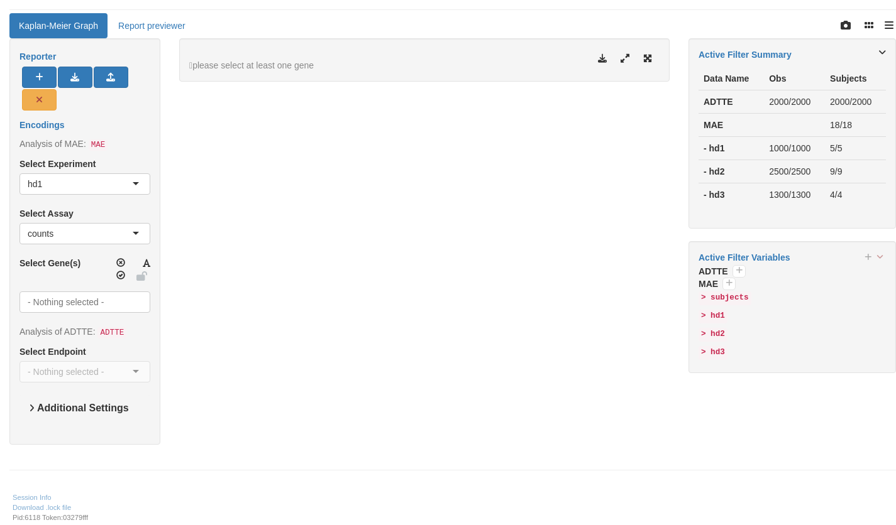

RNAG9
RNAseq Kaplan-Meier Graph
This page can be used as a template of how to produce Kaplan-Meier graphs for RNA-seq gene expression analysis using available tern and hermes functions, and to create an interactive Kaplan-Meier graph for RNA-seq gene expression analysis using teal.modules.hermes.
The code below needs both RNA-seq data (in HermesData format) and time-to-event data (in ADTTE format) as input.
We first prepare the time-to-event data. We define an event indicator variable, transform the time to months and filter down to the overall survival subset.
Then we prepare the RNA-seq data. See RNAG1 for basic details on how to import, filter and normalize HermesData. We use col_data_with_genes() to extract the sample variables (colData) from the object, together with a single specified gene or a specified gene signature. See ?hermes::gene_spec for details on how to do this. Then we use inner_join_cdisc() to join this genetic data with the ADTTE data from above. See the help page for more details, in particular how the join keys can be customized if needed - here we just join based on USUBJID by default.
We can then cut the resulting gene column (we figure out the column name and save it in arm_name below) in the joined_data into quantile bins (in this example we want three equally sized groups).
It is now simple to create the Kaplan-Meier graph by providing the data set created above with the variable specification. Note that we specify the above created gene_factor as arm variable here.
Code

See KG1 to KG5 for additional customization options for the Kaplan-Meier graphs or the help page ?g_km().
We start by importing a MultiAssayExperiment and sample ADTTE data; here we use the example multi_assay_experiment available in hermes and example ADTTE data from random.cdisc.data. We can then use the provided teal module tm_g_km to include the corresponding interactive Kaplan-Meier analysis in our teal app. Note that by default the counts assay is excluded via the exclude_assays argument, but we can include it by just saying that we dont want to exclude any assays. In case that we have different non-standard column names in our ADTTE data set we could also specify them via the adtte_vars argument, see the documentation ?tm_g_km for more details.
Code
library(teal.modules.hermes)
data <- teal_data()
data <- within(data, {
library(random.cdisc.data)
library(dplyr)
library(hermes)
MAE <- multi_assay_experiment
ADTTE <- random.cdisc.data::cadtte %>%
mutate(is_event = .data$CNSR == 0)
})
datanames(data) <- c("MAE", "ADTTE")
join_keys(data)["ADTTE", "ADTTE"] <- c("STUDYID", "USUBJID", "PARAMCD")
app <- init(
data = data,
modules = modules(
tm_g_km(
label = "Kaplan-Meier Graph",
adtte_name = "ADTTE",
mae_name = "MAE",
exclude_assays = character()
)
)
)
shinyApp(app$ui, app$server)[INFO] 2024-05-25 17:31:26.9980 pid:3766 token:[3eddf79a] teal.slice Default Shiny inputs initialized: {}
[INFO] 2024-05-25 17:31:27.0125 pid:3766 token:[3eddf79a] teal.slice Default Shiny inputs initialized: {}
[INFO] 2024-05-25 17:31:27.0157 pid:3766 token:[3eddf79a] teal.slice Default Shiny inputs initialized: {}
[INFO] 2024-05-25 17:31:27.0571 pid:3766 token:[3eddf79a] teal.slice Default Shiny inputs initialized: {}
[INFO] 2024-05-25 17:31:27.0623 pid:3766 token:[3eddf79a] teal.slice Default Shiny inputs initialized: {}
[INFO] 2024-05-25 17:31:27.0675 pid:3766 token:[3eddf79a] teal.slice Default Shiny inputs initialized: {}
[INFO] 2024-05-25 17:31:27.0755 pid:3766 token:[3eddf79a] teal.slice Default Shiny inputs initialized: {}
[INFO] 2024-05-25 17:31:27.0830 pid:3766 token:[3eddf79a] teal.slice Default Shiny inputs initialized: {}
[INFO] 2024-05-25 17:31:27.0919 pid:3766 token:[3eddf79a] teal.slice Default Shiny inputs initialized: {}
[INFO] 2024-05-25 17:31:27.4160 pid:3766 token:[3eddf79a] teal.slice Shiny input change detected on minimise_filter_overview: NULL -> 0
[INFO] 2024-05-25 17:31:27.4186 pid:3766 token:[3eddf79a] teal.slice Shiny input change detected on minimise_filter_overview: 0 -> NULL
[INFO] 2024-05-25 17:31:27.4199 pid:3766 token:[3eddf79a] teal.slice Shiny input change detected on available_filters-show_dropmenu: NULL -> FALSE
[INFO] 2024-05-25 17:31:27.4213 pid:3766 token:[3eddf79a] teal.slice Shiny input change detected on available_filters-show: NULL -> 0
[INFO] 2024-05-25 17:31:27.4225 pid:3766 token:[3eddf79a] teal.slice Shiny input change detected on minimise_filter_active: NULL -> 0
[INFO] 2024-05-25 17:31:27.4237 pid:3766 token:[3eddf79a] teal.slice Shiny input change detected on remove_all_filters: NULL -> 0
[INFO] 2024-05-25 17:31:27.4250 pid:3766 token:[3eddf79a] teal.slice Shiny input change detected on MAE-remove_filters: NULL -> 0
[INFO] 2024-05-25 17:31:27.4261 pid:3766 token:[3eddf79a] teal.slice Shiny input change detected on MAE-collapse: NULL -> 0
[INFO] 2024-05-25 17:31:27.4273 pid:3766 token:[3eddf79a] teal.slice Shiny input change detected on ADTTE-remove_filters: NULL -> 0
[INFO] 2024-05-25 17:31:27.4286 pid:3766 token:[3eddf79a] teal.slice Shiny input change detected on ADTTE-collapse: NULL -> 0
[INFO] 2024-05-25 17:31:27.4305 pid:3766 token:[3eddf79a] teal.slice Shiny input change detected on available_filters-show_dropmenu: FALSE -> NULL
[INFO] 2024-05-25 17:31:27.4317 pid:3766 token:[3eddf79a] teal.slice Shiny input change detected on available_filters-show: 0 -> NULL
[INFO] 2024-05-25 17:31:27.4330 pid:3766 token:[3eddf79a] teal.slice Shiny input change detected on minimise_filter_active: 0 -> NULL
[INFO] 2024-05-25 17:31:27.4342 pid:3766 token:[3eddf79a] teal.slice Shiny input change detected on remove_all_filters: 0 -> NULL
[INFO] 2024-05-25 17:31:27.4353 pid:3766 token:[3eddf79a] teal.slice Shiny input change detected on MAE-remove_filters: 0 -> NULL
[INFO] 2024-05-25 17:31:27.4366 pid:3766 token:[3eddf79a] teal.slice Shiny input change detected on MAE-collapse: 0 -> NULL
[INFO] 2024-05-25 17:31:27.4380 pid:3766 token:[3eddf79a] teal.slice Shiny input change detected on ADTTE-remove_filters: 0 -> NULL
[INFO] 2024-05-25 17:31:27.4393 pid:3766 token:[3eddf79a] teal.slice Shiny input change detected on ADTTE-collapse: 0 -> NULL
[INFO] 2024-05-25 17:31:27.4406 pid:3766 token:[3eddf79a] teal.slice Shiny input change detected on show_dropmenu: NULL -> FALSE
[INFO] 2024-05-25 17:31:27.4418 pid:3766 token:[3eddf79a] teal.slice Shiny input change detected on show: NULL -> 0
[INFO] 2024-05-25 17:31:27.4437 pid:3766 token:[3eddf79a] teal.slice Shiny input change detected on show_dropmenu: FALSE -> NULL
[INFO] 2024-05-25 17:31:27.4449 pid:3766 token:[3eddf79a] teal.slice Shiny input change detected on show: 0 -> NULL
[INFO] 2024-05-25 17:31:27.4462 pid:3766 token:[3eddf79a] teal.slice Shiny input change detected on MAE-hd1-row_to_add: NULL -> NULL
[INFO] 2024-05-25 17:31:27.4474 pid:3766 token:[3eddf79a] teal.slice Shiny input change detected on MAE-hd1-col_to_add: NULL -> NULL
[INFO] 2024-05-25 17:31:27.4486 pid:3766 token:[3eddf79a] teal.slice Shiny input change detected on MAE-hd2-row_to_add: NULL -> NULL
[INFO] 2024-05-25 17:31:27.4497 pid:3766 token:[3eddf79a] teal.slice Shiny input change detected on MAE-hd2-col_to_add: NULL -> NULL
[INFO] 2024-05-25 17:31:27.4509 pid:3766 token:[3eddf79a] teal.slice Shiny input change detected on MAE-hd3-row_to_add: NULL -> NULL
[INFO] 2024-05-25 17:31:27.4522 pid:3766 token:[3eddf79a] teal.slice Shiny input change detected on MAE-hd3-col_to_add: NULL -> NULL
[INFO] 2024-05-25 17:31:27.4533 pid:3766 token:[3eddf79a] teal.slice Shiny input change detected on minimise_filter_add_vars: NULL -> 0
[INFO] 2024-05-25 17:31:27.4555 pid:3766 token:[3eddf79a] teal.slice Shiny input change detected on MAE-hd1-row_to_add: NULL -> NULL
[INFO] 2024-05-25 17:31:27.4568 pid:3766 token:[3eddf79a] teal.slice Shiny input change detected on MAE-hd1-col_to_add: NULL -> NULL
[INFO] 2024-05-25 17:31:27.4580 pid:3766 token:[3eddf79a] teal.slice Shiny input change detected on MAE-hd2-row_to_add: NULL -> NULL
[INFO] 2024-05-25 17:31:27.4591 pid:3766 token:[3eddf79a] teal.slice Shiny input change detected on MAE-hd2-col_to_add: NULL -> NULL
[INFO] 2024-05-25 17:31:27.4604 pid:3766 token:[3eddf79a] teal.slice Shiny input change detected on MAE-hd3-row_to_add: NULL -> NULL
[INFO] 2024-05-25 17:31:27.4616 pid:3766 token:[3eddf79a] teal.slice Shiny input change detected on MAE-hd3-col_to_add: NULL -> NULL
[INFO] 2024-05-25 17:31:27.4627 pid:3766 token:[3eddf79a] teal.slice Shiny input change detected on minimise_filter_add_vars: 0 -> NULL
[INFO] 2024-05-25 17:31:27.4647 pid:3766 token:[3eddf79a] teal.slice Shiny input change detected on row_to_add: NULL -> NULL
[INFO] 2024-05-25 17:31:27.4660 pid:3766 token:[3eddf79a] teal.slice Shiny input change detected on col_to_add: NULL -> NULL
[INFO] 2024-05-25 17:31:27.4693 pid:3766 token:[3eddf79a] teal.slice Shiny input change detected on row_to_add: NULL -> NULL
[INFO] 2024-05-25 17:31:27.4705 pid:3766 token:[3eddf79a] teal.slice Shiny input change detected on col_to_add: NULL -> NULL
[INFO] 2024-05-25 17:31:27.8194 pid:3766 token:[3eddf79a] teal.modules.hermes Default Shiny inputs initialized: {"strata-sample_var":{},"simple_reporter-add_report_card_simple-add_report_card_button":0,"simple_reporter-download_button_simple-download_button":0,"simple_reporter-archive_load_simple-reporter_load":0,"simple_reporter-reset_button_simple-reset_reporter":0,"genes-select_none_button":0,"genes-select_all_button":0,"genes-text_button":0,"strata-levels_button":0,"plot-downbutton-downl":0,"plot-expand":0,"plot-expbut":0,"assay-name":"","genes-genes":{},"genes-fun_name":"Mean","adtte-paramcd":"","percentiles":[0,0.5],"plot-downbutton-file_format":"png","genes-lock_button":false,"plot-downbutton-file_name":"plot_20240525_173126"}
[INFO] 2024-05-25 17:31:27.8257 pid:3766 token:[3eddf79a] teal.modules.hermes Default Shiny inputs initialized: {}
[INFO] 2024-05-25 17:31:27.8333 pid:3766 token:[3eddf79a] teal.modules.hermes Default Shiny inputs initialized: {"name":""}
[INFO] 2024-05-25 17:31:27.8398 pid:3766 token:[3eddf79a] teal.modules.hermes Default Shiny inputs initialized: {"select_none_button":0,"select_all_button":0,"text_button":0,"genes":{},"fun_name":"Mean","lock_button":false}
[INFO] 2024-05-25 17:31:27.8523 pid:3766 token:[3eddf79a] teal.modules.hermes Default Shiny inputs initialized: {"sample_var":{},"levels_button":0}
[INFO] 2024-05-25 17:31:27.8638 pid:3766 token:[3eddf79a] teal.modules.hermes Default Shiny inputs initialized: {"paramcd":""}
[INFO] 2024-05-25 17:31:27.9208 pid:3766 token:[3eddf79a] teal.modules.hermes Shiny input change detected on paramcd: -> NULL
[INFO] 2024-05-25 17:31:27.9224 pid:3766 token:[3eddf79a] teal.modules.hermes Shiny input change detected on strata-sample_var: NULL -> NULL
[INFO] 2024-05-25 17:31:27.9239 pid:3766 token:[3eddf79a] teal.modules.hermes Shiny input change detected on simple_reporter-add_report_card_simple-add_report_card_button: NULL -> 0
[INFO] 2024-05-25 17:31:27.9254 pid:3766 token:[3eddf79a] teal.modules.hermes Shiny input change detected on simple_reporter-download_button_simple-download_button: NULL -> 0
[INFO] 2024-05-25 17:31:27.9268 pid:3766 token:[3eddf79a] teal.modules.hermes Shiny input change detected on simple_reporter-archive_load_simple-reporter_load: NULL -> 0
[INFO] 2024-05-25 17:31:27.9283 pid:3766 token:[3eddf79a] teal.modules.hermes Shiny input change detected on simple_reporter-reset_button_simple-reset_reporter: NULL -> 0
[INFO] 2024-05-25 17:31:27.9297 pid:3766 token:[3eddf79a] teal.modules.hermes Shiny input change detected on genes-select_none_button: NULL -> 0
[INFO] 2024-05-25 17:31:27.9312 pid:3766 token:[3eddf79a] teal.modules.hermes Shiny input change detected on genes-select_all_button: NULL -> 0
[INFO] 2024-05-25 17:31:27.9327 pid:3766 token:[3eddf79a] teal.modules.hermes Shiny input change detected on genes-text_button: NULL -> 0
[INFO] 2024-05-25 17:31:27.9341 pid:3766 token:[3eddf79a] teal.modules.hermes Shiny input change detected on strata-levels_button: NULL -> 0
[INFO] 2024-05-25 17:31:27.9355 pid:3766 token:[3eddf79a] teal.modules.hermes Shiny input change detected on plot-downbutton-downl: NULL -> 0
[INFO] 2024-05-25 17:31:27.9370 pid:3766 token:[3eddf79a] teal.modules.hermes Shiny input change detected on plot-expand: NULL -> 0
[INFO] 2024-05-25 17:31:27.9384 pid:3766 token:[3eddf79a] teal.modules.hermes Shiny input change detected on plot-expbut: NULL -> 0
[INFO] 2024-05-25 17:31:27.9399 pid:3766 token:[3eddf79a] teal.modules.hermes Shiny input change detected on assay-name: NULL ->
[INFO] 2024-05-25 17:31:27.9414 pid:3766 token:[3eddf79a] teal.modules.hermes Shiny input change detected on genes-genes: NULL -> NULL
[INFO] 2024-05-25 17:31:27.9428 pid:3766 token:[3eddf79a] teal.modules.hermes Shiny input change detected on genes-fun_name: NULL -> Mean
[INFO] 2024-05-25 17:31:27.9443 pid:3766 token:[3eddf79a] teal.modules.hermes Shiny input change detected on adtte-paramcd: NULL ->
[INFO] 2024-05-25 17:31:27.9458 pid:3766 token:[3eddf79a] teal.modules.hermes Shiny input change detected on percentiles: NULL -> c(0, 0.5)
[INFO] 2024-05-25 17:31:27.9472 pid:3766 token:[3eddf79a] teal.modules.hermes Shiny input change detected on plot-downbutton-file_format: NULL -> png
[INFO] 2024-05-25 17:31:27.9487 pid:3766 token:[3eddf79a] teal.modules.hermes Shiny input change detected on genes-lock_button: NULL -> FALSE
[INFO] 2024-05-25 17:31:27.9501 pid:3766 token:[3eddf79a] teal.modules.hermes Shiny input change detected on plot-downbutton-file_name: NULL -> plot_20240525_173126
[INFO] 2024-05-25 17:31:27.9595 pid:3766 token:[3eddf79a] teal.modules.hermes Shiny input change detected on strata-sample_var: NULL -> NULL
[INFO] 2024-05-25 17:31:27.9610 pid:3766 token:[3eddf79a] teal.modules.hermes Shiny input change detected on simple_reporter-add_report_card_simple-add_report_card_button: 0 -> NULL
[INFO] 2024-05-25 17:31:27.9624 pid:3766 token:[3eddf79a] teal.modules.hermes Shiny input change detected on simple_reporter-download_button_simple-download_button: 0 -> NULL
[INFO] 2024-05-25 17:31:27.9639 pid:3766 token:[3eddf79a] teal.modules.hermes Shiny input change detected on simple_reporter-archive_load_simple-reporter_load: 0 -> NULL
[INFO] 2024-05-25 17:31:27.9658 pid:3766 token:[3eddf79a] teal.modules.hermes Shiny input change detected on simple_reporter-reset_button_simple-reset_reporter: 0 -> NULL
[INFO] 2024-05-25 17:31:27.9821 pid:3766 token:[3eddf79a] teal.modules.hermes Shiny input change detected on genes-select_none_button: 0 -> NULL
[INFO] 2024-05-25 17:31:27.9836 pid:3766 token:[3eddf79a] teal.modules.hermes Shiny input change detected on genes-select_all_button: 0 -> NULL
[INFO] 2024-05-25 17:31:27.9848 pid:3766 token:[3eddf79a] teal.modules.hermes Shiny input change detected on genes-text_button: 0 -> NULL
[INFO] 2024-05-25 17:31:27.9860 pid:3766 token:[3eddf79a] teal.modules.hermes Shiny input change detected on strata-levels_button: 0 -> NULL
[INFO] 2024-05-25 17:31:27.9871 pid:3766 token:[3eddf79a] teal.modules.hermes Shiny input change detected on plot-downbutton-downl: 0 -> NULL
[INFO] 2024-05-25 17:31:27.9884 pid:3766 token:[3eddf79a] teal.modules.hermes Shiny input change detected on plot-expand: 0 -> NULL
[INFO] 2024-05-25 17:31:27.9896 pid:3766 token:[3eddf79a] teal.modules.hermes Shiny input change detected on plot-expbut: 0 -> NULL
[INFO] 2024-05-25 17:31:27.9908 pid:3766 token:[3eddf79a] teal.modules.hermes Shiny input change detected on assay-name: -> NULL
[INFO] 2024-05-25 17:31:27.9920 pid:3766 token:[3eddf79a] teal.modules.hermes Shiny input change detected on genes-genes: NULL -> NULL
[INFO] 2024-05-25 17:31:27.9932 pid:3766 token:[3eddf79a] teal.modules.hermes Shiny input change detected on genes-fun_name: Mean -> NULL
[INFO] 2024-05-25 17:31:27.9943 pid:3766 token:[3eddf79a] teal.modules.hermes Shiny input change detected on adtte-paramcd: -> NULL
[INFO] 2024-05-25 17:31:27.9955 pid:3766 token:[3eddf79a] teal.modules.hermes Shiny input change detected on percentiles: c(0, 0.5) -> NULL
[INFO] 2024-05-25 17:31:27.9968 pid:3766 token:[3eddf79a] teal.modules.hermes Shiny input change detected on plot-downbutton-file_format: png -> NULL
[INFO] 2024-05-25 17:31:27.9980 pid:3766 token:[3eddf79a] teal.modules.hermes Shiny input change detected on genes-lock_button: FALSE -> NULL
[INFO] 2024-05-25 17:31:27.9991 pid:3766 token:[3eddf79a] teal.modules.hermes Shiny input change detected on plot-downbutton-file_name: plot_20240525_173126 -> NULL
[INFO] 2024-05-25 17:31:28.0012 pid:3766 token:[3eddf79a] teal.modules.hermes Shiny input change detected on name: NULL ->
[INFO] 2024-05-25 17:31:28.0051 pid:3766 token:[3eddf79a] teal.modules.hermes Shiny input change detected on name: -> NULL
[INFO] 2024-05-25 17:31:28.0063 pid:3766 token:[3eddf79a] teal.modules.hermes Shiny input change detected on select_none_button: NULL -> 0
[INFO] 2024-05-25 17:31:28.0075 pid:3766 token:[3eddf79a] teal.modules.hermes Shiny input change detected on select_all_button: NULL -> 0
[INFO] 2024-05-25 17:31:28.0087 pid:3766 token:[3eddf79a] teal.modules.hermes Shiny input change detected on text_button: NULL -> 0
[INFO] 2024-05-25 17:31:28.0099 pid:3766 token:[3eddf79a] teal.modules.hermes Shiny input change detected on genes: NULL -> NULL
[INFO] 2024-05-25 17:31:28.0111 pid:3766 token:[3eddf79a] teal.modules.hermes Shiny input change detected on fun_name: NULL -> Mean
[INFO] 2024-05-25 17:31:28.0123 pid:3766 token:[3eddf79a] teal.modules.hermes Shiny input change detected on lock_button: NULL -> FALSE
[INFO] 2024-05-25 17:31:28.0190 pid:3766 token:[3eddf79a] teal.modules.hermes Shiny input change detected on select_none_button: 0 -> NULL
[INFO] 2024-05-25 17:31:28.0203 pid:3766 token:[3eddf79a] teal.modules.hermes Shiny input change detected on select_all_button: 0 -> NULL
[INFO] 2024-05-25 17:31:28.0215 pid:3766 token:[3eddf79a] teal.modules.hermes Shiny input change detected on text_button: 0 -> NULL
[INFO] 2024-05-25 17:31:28.0227 pid:3766 token:[3eddf79a] teal.modules.hermes Shiny input change detected on genes: NULL -> NULL
[INFO] 2024-05-25 17:31:28.0239 pid:3766 token:[3eddf79a] teal.modules.hermes Shiny input change detected on fun_name: Mean -> NULL
[INFO] 2024-05-25 17:31:28.0250 pid:3766 token:[3eddf79a] teal.modules.hermes Shiny input change detected on lock_button: FALSE -> NULL
[INFO] 2024-05-25 17:31:28.0262 pid:3766 token:[3eddf79a] teal.modules.hermes Shiny input change detected on sample_var: NULL -> NULL
[INFO] 2024-05-25 17:31:28.0274 pid:3766 token:[3eddf79a] teal.modules.hermes Shiny input change detected on levels_button: NULL -> 0
[INFO] 2024-05-25 17:31:28.0334 pid:3766 token:[3eddf79a] teal.modules.hermes Shiny input change detected on sample_var: NULL -> NULL
[INFO] 2024-05-25 17:31:28.0346 pid:3766 token:[3eddf79a] teal.modules.hermes Shiny input change detected on levels_button: 0 -> NULL
[INFO] 2024-05-25 17:31:28.0358 pid:3766 token:[3eddf79a] teal.modules.hermes Shiny input change detected on paramcd: NULL ->
[INFO] 2024-05-25 17:31:28.1432 pid:3766 token:[3eddf79a] teal.slice Shiny input change detected on paramcd: -> NULL
[INFO] 2024-05-25 17:31:28.1447 pid:3766 token:[3eddf79a] teal.slice Shiny input change detected on minimise_filter_overview: NULL -> 0
[INFO] 2024-05-25 17:31:28.1466 pid:3766 token:[3eddf79a] teal.slice Shiny input change detected on minimise_filter_overview: 0 -> NULL
[INFO] 2024-05-25 17:31:28.1479 pid:3766 token:[3eddf79a] teal.slice Shiny input change detected on available_filters-show_dropmenu: NULL -> FALSE
[INFO] 2024-05-25 17:31:28.1491 pid:3766 token:[3eddf79a] teal.slice Shiny input change detected on available_filters-show: NULL -> 0
[INFO] 2024-05-25 17:31:28.1502 pid:3766 token:[3eddf79a] teal.slice Shiny input change detected on minimise_filter_active: NULL -> 0
[INFO] 2024-05-25 17:31:28.1514 pid:3766 token:[3eddf79a] teal.slice Shiny input change detected on remove_all_filters: NULL -> 0
[INFO] 2024-05-25 17:31:28.1526 pid:3766 token:[3eddf79a] teal.slice Shiny input change detected on MAE-remove_filters: NULL -> 0
[INFO] 2024-05-25 17:31:28.1538 pid:3766 token:[3eddf79a] teal.slice Shiny input change detected on MAE-collapse: NULL -> 0
[INFO] 2024-05-25 17:31:28.1551 pid:3766 token:[3eddf79a] teal.slice Shiny input change detected on ADTTE-remove_filters: NULL -> 0
[INFO] 2024-05-25 17:31:28.1563 pid:3766 token:[3eddf79a] teal.slice Shiny input change detected on ADTTE-collapse: NULL -> 0
[INFO] 2024-05-25 17:31:28.1582 pid:3766 token:[3eddf79a] teal.slice Shiny input change detected on available_filters-show_dropmenu: FALSE -> NULL
[INFO] 2024-05-25 17:31:28.1594 pid:3766 token:[3eddf79a] teal.slice Shiny input change detected on available_filters-show: 0 -> NULL
[INFO] 2024-05-25 17:31:28.1606 pid:3766 token:[3eddf79a] teal.slice Shiny input change detected on minimise_filter_active: 0 -> NULL
[INFO] 2024-05-25 17:31:28.1618 pid:3766 token:[3eddf79a] teal.slice Shiny input change detected on remove_all_filters: 0 -> NULL
[INFO] 2024-05-25 17:31:28.1629 pid:3766 token:[3eddf79a] teal.slice Shiny input change detected on MAE-remove_filters: 0 -> NULL
[INFO] 2024-05-25 17:31:28.1642 pid:3766 token:[3eddf79a] teal.slice Shiny input change detected on MAE-collapse: 0 -> NULL
[INFO] 2024-05-25 17:31:28.1653 pid:3766 token:[3eddf79a] teal.slice Shiny input change detected on ADTTE-remove_filters: 0 -> NULL
[INFO] 2024-05-25 17:31:28.1665 pid:3766 token:[3eddf79a] teal.slice Shiny input change detected on ADTTE-collapse: 0 -> NULL
[INFO] 2024-05-25 17:31:28.1677 pid:3766 token:[3eddf79a] teal.slice Shiny input change detected on show_dropmenu: NULL -> FALSE
[INFO] 2024-05-25 17:31:28.1689 pid:3766 token:[3eddf79a] teal.slice Shiny input change detected on show: NULL -> 0
[INFO] 2024-05-25 17:31:28.1708 pid:3766 token:[3eddf79a] teal.slice Shiny input change detected on show_dropmenu: FALSE -> NULL
[INFO] 2024-05-25 17:31:28.1720 pid:3766 token:[3eddf79a] teal.slice Shiny input change detected on show: 0 -> NULL
[INFO] 2024-05-25 17:31:28.1732 pid:3766 token:[3eddf79a] teal.slice Shiny input change detected on MAE-hd1-row_to_add: NULL -> NULL
[INFO] 2024-05-25 17:31:28.1744 pid:3766 token:[3eddf79a] teal.slice Shiny input change detected on MAE-hd1-col_to_add: NULL -> NULL
[INFO] 2024-05-25 17:31:28.1756 pid:3766 token:[3eddf79a] teal.slice Shiny input change detected on MAE-hd2-row_to_add: NULL -> NULL
[INFO] 2024-05-25 17:31:28.1768 pid:3766 token:[3eddf79a] teal.slice Shiny input change detected on MAE-hd2-col_to_add: NULL -> NULL
[INFO] 2024-05-25 17:31:28.1779 pid:3766 token:[3eddf79a] teal.slice Shiny input change detected on MAE-hd3-row_to_add: NULL -> NULL
[INFO] 2024-05-25 17:31:28.1791 pid:3766 token:[3eddf79a] teal.slice Shiny input change detected on MAE-hd3-col_to_add: NULL -> NULL
[INFO] 2024-05-25 17:31:28.1803 pid:3766 token:[3eddf79a] teal.slice Shiny input change detected on minimise_filter_add_vars: NULL -> 0
[INFO] 2024-05-25 17:31:28.1822 pid:3766 token:[3eddf79a] teal.slice Shiny input change detected on MAE-hd1-row_to_add: NULL -> NULL
[INFO] 2024-05-25 17:31:28.1834 pid:3766 token:[3eddf79a] teal.slice Shiny input change detected on MAE-hd1-col_to_add: NULL -> NULL
[INFO] 2024-05-25 17:31:28.1846 pid:3766 token:[3eddf79a] teal.slice Shiny input change detected on MAE-hd2-row_to_add: NULL -> NULL
[INFO] 2024-05-25 17:31:28.1858 pid:3766 token:[3eddf79a] teal.slice Shiny input change detected on MAE-hd2-col_to_add: NULL -> NULL
[INFO] 2024-05-25 17:31:28.1870 pid:3766 token:[3eddf79a] teal.slice Shiny input change detected on MAE-hd3-row_to_add: NULL -> NULL
[INFO] 2024-05-25 17:31:28.1882 pid:3766 token:[3eddf79a] teal.slice Shiny input change detected on MAE-hd3-col_to_add: NULL -> NULL
[INFO] 2024-05-25 17:31:28.1894 pid:3766 token:[3eddf79a] teal.slice Shiny input change detected on minimise_filter_add_vars: 0 -> NULL
[INFO] 2024-05-25 17:31:28.1912 pid:3766 token:[3eddf79a] teal.slice Shiny input change detected on row_to_add: NULL -> NULL
[INFO] 2024-05-25 17:31:28.1925 pid:3766 token:[3eddf79a] teal.slice Shiny input change detected on col_to_add: NULL -> NULL
[INFO] 2024-05-25 17:31:28.1956 pid:3766 token:[3eddf79a] teal.slice Shiny input change detected on row_to_add: NULL -> NULL
[INFO] 2024-05-25 17:31:28.1968 pid:3766 token:[3eddf79a] teal.slice Shiny input change detected on col_to_add: NULL -> NULL
[INFO] 2024-05-25 17:31:28.1988 pid:3766 token:[3eddf79a] teal.modules.hermes Shiny input change detected on strata-sample_var: NULL -> NULL
[INFO] 2024-05-25 17:31:28.2001 pid:3766 token:[3eddf79a] teal.modules.hermes Shiny input change detected on simple_reporter-add_report_card_simple-add_report_card_button: NULL -> 0
[INFO] 2024-05-25 17:31:28.2013 pid:3766 token:[3eddf79a] teal.modules.hermes Shiny input change detected on simple_reporter-download_button_simple-download_button: NULL -> 0
[INFO] 2024-05-25 17:31:28.2025 pid:3766 token:[3eddf79a] teal.modules.hermes Shiny input change detected on simple_reporter-archive_load_simple-reporter_load: NULL -> 0
[INFO] 2024-05-25 17:31:28.2037 pid:3766 token:[3eddf79a] teal.modules.hermes Shiny input change detected on simple_reporter-reset_button_simple-reset_reporter: NULL -> 0
[INFO] 2024-05-25 17:31:28.2049 pid:3766 token:[3eddf79a] teal.modules.hermes Shiny input change detected on genes-select_none_button: NULL -> 0
[INFO] 2024-05-25 17:31:28.2061 pid:3766 token:[3eddf79a] teal.modules.hermes Shiny input change detected on genes-select_all_button: NULL -> 0
[INFO] 2024-05-25 17:31:28.2072 pid:3766 token:[3eddf79a] teal.modules.hermes Shiny input change detected on genes-text_button: NULL -> 0
[INFO] 2024-05-25 17:31:28.2085 pid:3766 token:[3eddf79a] teal.modules.hermes Shiny input change detected on strata-levels_button: NULL -> 0
[INFO] 2024-05-25 17:31:28.2097 pid:3766 token:[3eddf79a] teal.modules.hermes Shiny input change detected on plot-downbutton-downl: NULL -> 0
[INFO] 2024-05-25 17:31:28.2109 pid:3766 token:[3eddf79a] teal.modules.hermes Shiny input change detected on plot-expand: NULL -> 0
[INFO] 2024-05-25 17:31:28.2121 pid:3766 token:[3eddf79a] teal.modules.hermes Shiny input change detected on plot-expbut: NULL -> 0
[INFO] 2024-05-25 17:31:28.2134 pid:3766 token:[3eddf79a] teal.modules.hermes Shiny input change detected on assay-name: NULL ->
[INFO] 2024-05-25 17:31:28.2145 pid:3766 token:[3eddf79a] teal.modules.hermes Shiny input change detected on genes-genes: NULL -> NULL
[INFO] 2024-05-25 17:31:28.2157 pid:3766 token:[3eddf79a] teal.modules.hermes Shiny input change detected on genes-fun_name: NULL -> Mean
[INFO] 2024-05-25 17:31:28.2169 pid:3766 token:[3eddf79a] teal.modules.hermes Shiny input change detected on adtte-paramcd: NULL ->
[INFO] 2024-05-25 17:31:28.2181 pid:3766 token:[3eddf79a] teal.modules.hermes Shiny input change detected on percentiles: NULL -> c(0, 0.5)
[INFO] 2024-05-25 17:31:28.2193 pid:3766 token:[3eddf79a] teal.modules.hermes Shiny input change detected on plot-downbutton-file_format: NULL -> png
[INFO] 2024-05-25 17:31:28.2205 pid:3766 token:[3eddf79a] teal.modules.hermes Shiny input change detected on genes-lock_button: NULL -> FALSE
[INFO] 2024-05-25 17:31:28.2216 pid:3766 token:[3eddf79a] teal.modules.hermes Shiny input change detected on plot-downbutton-file_name: NULL -> plot_20240525_173126
[INFO] 2024-05-25 17:31:28.2228 pid:3766 token:[3eddf79a] teal.modules.hermes Shiny input change detected on plot-flex_width: NULL -> 732
[INFO] 2024-05-25 17:31:28.2240 pid:3766 token:[3eddf79a] teal.modules.hermes Shiny input change detected on plot-plot_modal_width: NULL -> 1252.8
[INFO] 2024-05-25 17:31:28.2260 pid:3766 token:[3eddf79a] teal.modules.hermes Shiny input change detected on strata-sample_var: NULL -> NULL
[INFO] 2024-05-25 17:31:28.2272 pid:3766 token:[3eddf79a] teal.modules.hermes Shiny input change detected on simple_reporter-add_report_card_simple-add_report_card_button: 0 -> NULL
[INFO] 2024-05-25 17:31:28.2284 pid:3766 token:[3eddf79a] teal.modules.hermes Shiny input change detected on simple_reporter-download_button_simple-download_button: 0 -> NULL
[INFO] 2024-05-25 17:31:28.2296 pid:3766 token:[3eddf79a] teal.modules.hermes Shiny input change detected on simple_reporter-archive_load_simple-reporter_load: 0 -> NULL
[INFO] 2024-05-25 17:31:28.2308 pid:3766 token:[3eddf79a] teal.modules.hermes Shiny input change detected on simple_reporter-reset_button_simple-reset_reporter: 0 -> NULL
[INFO] 2024-05-25 17:31:28.2320 pid:3766 token:[3eddf79a] teal.modules.hermes Shiny input change detected on genes-select_none_button: 0 -> NULL
[INFO] 2024-05-25 17:31:28.2332 pid:3766 token:[3eddf79a] teal.modules.hermes Shiny input change detected on genes-select_all_button: 0 -> NULL
[INFO] 2024-05-25 17:31:28.2344 pid:3766 token:[3eddf79a] teal.modules.hermes Shiny input change detected on genes-text_button: 0 -> NULL
[INFO] 2024-05-25 17:31:28.2356 pid:3766 token:[3eddf79a] teal.modules.hermes Shiny input change detected on strata-levels_button: 0 -> NULL
[INFO] 2024-05-25 17:31:28.2368 pid:3766 token:[3eddf79a] teal.modules.hermes Shiny input change detected on plot-downbutton-downl: 0 -> NULL
[INFO] 2024-05-25 17:31:28.2380 pid:3766 token:[3eddf79a] teal.modules.hermes Shiny input change detected on plot-expand: 0 -> NULL
[INFO] 2024-05-25 17:31:28.2393 pid:3766 token:[3eddf79a] teal.modules.hermes Shiny input change detected on plot-expbut: 0 -> NULL
[INFO] 2024-05-25 17:31:28.2405 pid:3766 token:[3eddf79a] teal.modules.hermes Shiny input change detected on assay-name: -> NULL
[INFO] 2024-05-25 17:31:28.2417 pid:3766 token:[3eddf79a] teal.modules.hermes Shiny input change detected on genes-genes: NULL -> NULL
[INFO] 2024-05-25 17:31:28.2428 pid:3766 token:[3eddf79a] teal.modules.hermes Shiny input change detected on genes-fun_name: Mean -> NULL
[INFO] 2024-05-25 17:31:28.2440 pid:3766 token:[3eddf79a] teal.modules.hermes Shiny input change detected on adtte-paramcd: -> NULL
[INFO] 2024-05-25 17:31:28.2452 pid:3766 token:[3eddf79a] teal.modules.hermes Shiny input change detected on percentiles: c(0, 0.5) -> NULL
[INFO] 2024-05-25 17:31:28.2464 pid:3766 token:[3eddf79a] teal.modules.hermes Shiny input change detected on plot-downbutton-file_format: png -> NULL
[INFO] 2024-05-25 17:31:28.2476 pid:3766 token:[3eddf79a] teal.modules.hermes Shiny input change detected on genes-lock_button: FALSE -> NULL
[INFO] 2024-05-25 17:31:28.2488 pid:3766 token:[3eddf79a] teal.modules.hermes Shiny input change detected on plot-downbutton-file_name: plot_20240525_173126 -> NULL
[INFO] 2024-05-25 17:31:28.2500 pid:3766 token:[3eddf79a] teal.modules.hermes Shiny input change detected on plot-flex_width: 732 -> NULL
[INFO] 2024-05-25 17:31:28.2512 pid:3766 token:[3eddf79a] teal.modules.hermes Shiny input change detected on plot-plot_modal_width: 1252.8 -> NULL
[INFO] 2024-05-25 17:31:28.2531 pid:3766 token:[3eddf79a] teal.modules.hermes Shiny input change detected on name: NULL ->
[INFO] 2024-05-25 17:31:28.2550 pid:3766 token:[3eddf79a] teal.modules.hermes Shiny input change detected on name: -> NULL
[INFO] 2024-05-25 17:31:28.2563 pid:3766 token:[3eddf79a] teal.modules.hermes Shiny input change detected on select_none_button: NULL -> 0
[INFO] 2024-05-25 17:31:28.2575 pid:3766 token:[3eddf79a] teal.modules.hermes Shiny input change detected on select_all_button: NULL -> 0
[INFO] 2024-05-25 17:31:28.2587 pid:3766 token:[3eddf79a] teal.modules.hermes Shiny input change detected on text_button: NULL -> 0
[INFO] 2024-05-25 17:31:28.2599 pid:3766 token:[3eddf79a] teal.modules.hermes Shiny input change detected on genes: NULL -> NULL
[INFO] 2024-05-25 17:31:28.2611 pid:3766 token:[3eddf79a] teal.modules.hermes Shiny input change detected on fun_name: NULL -> Mean
[INFO] 2024-05-25 17:31:28.2623 pid:3766 token:[3eddf79a] teal.modules.hermes Shiny input change detected on lock_button: NULL -> FALSE
[INFO] 2024-05-25 17:31:28.2642 pid:3766 token:[3eddf79a] teal.modules.hermes Shiny input change detected on select_none_button: 0 -> NULL
[INFO] 2024-05-25 17:31:28.2654 pid:3766 token:[3eddf79a] teal.modules.hermes Shiny input change detected on select_all_button: 0 -> NULL
[INFO] 2024-05-25 17:31:28.2666 pid:3766 token:[3eddf79a] teal.modules.hermes Shiny input change detected on text_button: 0 -> NULL
[INFO] 2024-05-25 17:31:28.2678 pid:3766 token:[3eddf79a] teal.modules.hermes Shiny input change detected on genes: NULL -> NULL
[INFO] 2024-05-25 17:31:28.2691 pid:3766 token:[3eddf79a] teal.modules.hermes Shiny input change detected on fun_name: Mean -> NULL
[INFO] 2024-05-25 17:31:28.2703 pid:3766 token:[3eddf79a] teal.modules.hermes Shiny input change detected on lock_button: FALSE -> NULL
[INFO] 2024-05-25 17:31:28.2715 pid:3766 token:[3eddf79a] teal.modules.hermes Shiny input change detected on sample_var: NULL -> NULL
[INFO] 2024-05-25 17:31:28.2728 pid:3766 token:[3eddf79a] teal.modules.hermes Shiny input change detected on levels_button: NULL -> 0
[INFO] 2024-05-25 17:31:28.2747 pid:3766 token:[3eddf79a] teal.modules.hermes Shiny input change detected on sample_var: NULL -> NULL
[INFO] 2024-05-25 17:31:28.2759 pid:3766 token:[3eddf79a] teal.modules.hermes Shiny input change detected on levels_button: 0 -> NULL
[INFO] 2024-05-25 17:31:28.2771 pid:3766 token:[3eddf79a] teal.modules.hermes Shiny input change detected on paramcd: NULL -> Warning: 'experiments' dropped; see 'drops()'[INFO] 2024-05-25 17:31:28.5001 pid:3766 token:[3eddf79a] teal.slice Shiny input change detected on paramcd: -> NULL
[INFO] 2024-05-25 17:31:28.5015 pid:3766 token:[3eddf79a] teal.slice Shiny input change detected on minimise_filter_overview: NULL -> 0
[INFO] 2024-05-25 17:31:28.5035 pid:3766 token:[3eddf79a] teal.slice Shiny input change detected on minimise_filter_overview: 0 -> NULL
[INFO] 2024-05-25 17:31:28.5047 pid:3766 token:[3eddf79a] teal.slice Shiny input change detected on available_filters-show_dropmenu: NULL -> FALSE
[INFO] 2024-05-25 17:31:28.5059 pid:3766 token:[3eddf79a] teal.slice Shiny input change detected on available_filters-show: NULL -> 0
[INFO] 2024-05-25 17:31:28.5071 pid:3766 token:[3eddf79a] teal.slice Shiny input change detected on minimise_filter_active: NULL -> 0
[INFO] 2024-05-25 17:31:28.5083 pid:3766 token:[3eddf79a] teal.slice Shiny input change detected on remove_all_filters: NULL -> 0
[INFO] 2024-05-25 17:31:28.5095 pid:3766 token:[3eddf79a] teal.slice Shiny input change detected on MAE-remove_filters: NULL -> 0
[INFO] 2024-05-25 17:31:28.5107 pid:3766 token:[3eddf79a] teal.slice Shiny input change detected on MAE-collapse: NULL -> 0
[INFO] 2024-05-25 17:31:28.5119 pid:3766 token:[3eddf79a] teal.slice Shiny input change detected on ADTTE-remove_filters: NULL -> 0
[INFO] 2024-05-25 17:31:28.5131 pid:3766 token:[3eddf79a] teal.slice Shiny input change detected on ADTTE-collapse: NULL -> 0
[INFO] 2024-05-25 17:31:28.5150 pid:3766 token:[3eddf79a] teal.slice Shiny input change detected on available_filters-show_dropmenu: FALSE -> NULL
[INFO] 2024-05-25 17:31:28.5163 pid:3766 token:[3eddf79a] teal.slice Shiny input change detected on available_filters-show: 0 -> NULL
[INFO] 2024-05-25 17:31:28.5175 pid:3766 token:[3eddf79a] teal.slice Shiny input change detected on minimise_filter_active: 0 -> NULL
[INFO] 2024-05-25 17:31:28.5187 pid:3766 token:[3eddf79a] teal.slice Shiny input change detected on remove_all_filters: 0 -> NULL
[INFO] 2024-05-25 17:31:28.5199 pid:3766 token:[3eddf79a] teal.slice Shiny input change detected on MAE-remove_filters: 0 -> NULL
[INFO] 2024-05-25 17:31:28.5211 pid:3766 token:[3eddf79a] teal.slice Shiny input change detected on MAE-collapse: 0 -> NULL
[INFO] 2024-05-25 17:31:28.5223 pid:3766 token:[3eddf79a] teal.slice Shiny input change detected on ADTTE-remove_filters: 0 -> NULL
[INFO] 2024-05-25 17:31:28.5235 pid:3766 token:[3eddf79a] teal.slice Shiny input change detected on ADTTE-collapse: 0 -> NULL
[INFO] 2024-05-25 17:31:28.5247 pid:3766 token:[3eddf79a] teal.slice Shiny input change detected on show_dropmenu: NULL -> FALSE
[INFO] 2024-05-25 17:31:28.5259 pid:3766 token:[3eddf79a] teal.slice Shiny input change detected on show: NULL -> 0
[INFO] 2024-05-25 17:31:28.5279 pid:3766 token:[3eddf79a] teal.slice Shiny input change detected on show_dropmenu: FALSE -> NULL
[INFO] 2024-05-25 17:31:28.5291 pid:3766 token:[3eddf79a] teal.slice Shiny input change detected on show: 0 -> NULL
[INFO] 2024-05-25 17:31:28.5303 pid:3766 token:[3eddf79a] teal.slice Shiny input change detected on MAE-hd1-row_to_add: NULL -> NULL
[INFO] 2024-05-25 17:31:28.5315 pid:3766 token:[3eddf79a] teal.slice Shiny input change detected on MAE-hd1-col_to_add: NULL -> NULL
[INFO] 2024-05-25 17:31:28.5327 pid:3766 token:[3eddf79a] teal.slice Shiny input change detected on MAE-hd2-row_to_add: NULL -> NULL
[INFO] 2024-05-25 17:31:28.5339 pid:3766 token:[3eddf79a] teal.slice Shiny input change detected on MAE-hd2-col_to_add: NULL -> NULL
[INFO] 2024-05-25 17:31:28.5351 pid:3766 token:[3eddf79a] teal.slice Shiny input change detected on MAE-hd3-row_to_add: NULL -> NULL
[INFO] 2024-05-25 17:31:28.5363 pid:3766 token:[3eddf79a] teal.slice Shiny input change detected on MAE-hd3-col_to_add: NULL -> NULL
[INFO] 2024-05-25 17:31:28.5375 pid:3766 token:[3eddf79a] teal.slice Shiny input change detected on minimise_filter_add_vars: NULL -> 0
[INFO] 2024-05-25 17:31:28.5387 pid:3766 token:[3eddf79a] teal.slice Shiny input change detected on ADTTE-filter-var_to_add: NULL -> NULL
[INFO] 2024-05-25 17:31:28.5399 pid:3766 token:[3eddf79a] teal.slice Shiny input change detected on MAE-subjects-var_to_add: NULL -> NULL
[INFO] 2024-05-25 17:31:28.5418 pid:3766 token:[3eddf79a] teal.slice Shiny input change detected on MAE-hd1-row_to_add: NULL -> NULL
[INFO] 2024-05-25 17:31:28.5430 pid:3766 token:[3eddf79a] teal.slice Shiny input change detected on MAE-hd1-col_to_add: NULL -> NULL
[INFO] 2024-05-25 17:31:28.5442 pid:3766 token:[3eddf79a] teal.slice Shiny input change detected on MAE-hd2-row_to_add: NULL -> NULL
[INFO] 2024-05-25 17:31:28.5454 pid:3766 token:[3eddf79a] teal.slice Shiny input change detected on MAE-hd2-col_to_add: NULL -> NULL
[INFO] 2024-05-25 17:31:28.5466 pid:3766 token:[3eddf79a] teal.slice Shiny input change detected on MAE-hd3-row_to_add: NULL -> NULL
[INFO] 2024-05-25 17:31:28.5478 pid:3766 token:[3eddf79a] teal.slice Shiny input change detected on MAE-hd3-col_to_add: NULL -> NULL
[INFO] 2024-05-25 17:31:28.5490 pid:3766 token:[3eddf79a] teal.slice Shiny input change detected on minimise_filter_add_vars: 0 -> NULL
[INFO] 2024-05-25 17:31:28.5501 pid:3766 token:[3eddf79a] teal.slice Shiny input change detected on ADTTE-filter-var_to_add: NULL -> NULL
[INFO] 2024-05-25 17:31:28.5513 pid:3766 token:[3eddf79a] teal.slice Shiny input change detected on MAE-subjects-var_to_add: NULL -> NULL
[INFO] 2024-05-25 17:31:28.5525 pid:3766 token:[3eddf79a] teal.slice Shiny input change detected on var_to_add: NULL -> NULL
[INFO] 2024-05-25 17:31:28.5544 pid:3766 token:[3eddf79a] teal.slice Shiny input change detected on var_to_add: NULL -> NULL
[INFO] 2024-05-25 17:31:28.5556 pid:3766 token:[3eddf79a] teal.slice Shiny input change detected on row_to_add: NULL -> NULL
[INFO] 2024-05-25 17:31:28.5568 pid:3766 token:[3eddf79a] teal.slice Shiny input change detected on col_to_add: NULL -> NULL
[INFO] 2024-05-25 17:31:28.5601 pid:3766 token:[3eddf79a] teal.slice Shiny input change detected on row_to_add: NULL -> NULL
[INFO] 2024-05-25 17:31:28.5613 pid:3766 token:[3eddf79a] teal.slice Shiny input change detected on col_to_add: NULL -> NULL
[INFO] 2024-05-25 17:31:28.5625 pid:3766 token:[3eddf79a] teal.slice Shiny input change detected on var_to_add: NULL -> NULL
[INFO] 2024-05-25 17:31:28.5645 pid:3766 token:[3eddf79a] teal.modules.hermes Shiny input change detected on var_to_add: NULL -> NULL
[INFO] 2024-05-25 17:31:28.5657 pid:3766 token:[3eddf79a] teal.modules.hermes Shiny input change detected on strata-sample_var: NULL -> NULL
[INFO] 2024-05-25 17:31:28.5669 pid:3766 token:[3eddf79a] teal.modules.hermes Shiny input change detected on simple_reporter-add_report_card_simple-add_report_card_button: NULL -> 0
[INFO] 2024-05-25 17:31:28.5681 pid:3766 token:[3eddf79a] teal.modules.hermes Shiny input change detected on simple_reporter-download_button_simple-download_button: NULL -> 0
[INFO] 2024-05-25 17:31:28.5693 pid:3766 token:[3eddf79a] teal.modules.hermes Shiny input change detected on simple_reporter-archive_load_simple-reporter_load: NULL -> 0
[INFO] 2024-05-25 17:31:28.5704 pid:3766 token:[3eddf79a] teal.modules.hermes Shiny input change detected on simple_reporter-reset_button_simple-reset_reporter: NULL -> 0
[INFO] 2024-05-25 17:31:28.5716 pid:3766 token:[3eddf79a] teal.modules.hermes Shiny input change detected on genes-select_none_button: NULL -> 0
[INFO] 2024-05-25 17:31:28.5729 pid:3766 token:[3eddf79a] teal.modules.hermes Shiny input change detected on genes-select_all_button: NULL -> 0
[INFO] 2024-05-25 17:31:28.5740 pid:3766 token:[3eddf79a] teal.modules.hermes Shiny input change detected on genes-text_button: NULL -> 0
[INFO] 2024-05-25 17:31:28.5752 pid:3766 token:[3eddf79a] teal.modules.hermes Shiny input change detected on strata-levels_button: NULL -> 0
[INFO] 2024-05-25 17:31:28.5764 pid:3766 token:[3eddf79a] teal.modules.hermes Shiny input change detected on plot-downbutton-downl: NULL -> 0
[INFO] 2024-05-25 17:31:28.5776 pid:3766 token:[3eddf79a] teal.modules.hermes Shiny input change detected on plot-expand: NULL -> 0
[INFO] 2024-05-25 17:31:28.5788 pid:3766 token:[3eddf79a] teal.modules.hermes Shiny input change detected on plot-expbut: NULL -> 0
[INFO] 2024-05-25 17:31:28.5800 pid:3766 token:[3eddf79a] teal.modules.hermes Shiny input change detected on assay-name: NULL ->
[INFO] 2024-05-25 17:31:28.5812 pid:3766 token:[3eddf79a] teal.modules.hermes Shiny input change detected on genes-genes: NULL -> NULL
[INFO] 2024-05-25 17:31:28.5823 pid:3766 token:[3eddf79a] teal.modules.hermes Shiny input change detected on genes-fun_name: NULL -> Mean
[INFO] 2024-05-25 17:31:28.5835 pid:3766 token:[3eddf79a] teal.modules.hermes Shiny input change detected on adtte-paramcd: NULL ->
[INFO] 2024-05-25 17:31:28.5847 pid:3766 token:[3eddf79a] teal.modules.hermes Shiny input change detected on percentiles: NULL -> c(0, 0.5)
[INFO] 2024-05-25 17:31:28.5859 pid:3766 token:[3eddf79a] teal.modules.hermes Shiny input change detected on plot-downbutton-file_format: NULL -> png
[INFO] 2024-05-25 17:31:28.5871 pid:3766 token:[3eddf79a] teal.modules.hermes Shiny input change detected on genes-lock_button: NULL -> FALSE
[INFO] 2024-05-25 17:31:28.5883 pid:3766 token:[3eddf79a] teal.modules.hermes Shiny input change detected on plot-downbutton-file_name: NULL -> plot_20240525_173126
[INFO] 2024-05-25 17:31:28.5895 pid:3766 token:[3eddf79a] teal.modules.hermes Shiny input change detected on plot-flex_width: NULL -> 732
[INFO] 2024-05-25 17:31:28.5906 pid:3766 token:[3eddf79a] teal.modules.hermes Shiny input change detected on plot-plot_modal_width: NULL -> 1252.8
[INFO] 2024-05-25 17:31:28.5918 pid:3766 token:[3eddf79a] teal.modules.hermes Shiny input change detected on experiment-name: NULL -> hd1
[INFO] 2024-05-25 17:31:28.5937 pid:3766 token:[3eddf79a] teal.modules.hermes Shiny input change detected on strata-sample_var: NULL -> NULL
[INFO] 2024-05-25 17:31:28.5949 pid:3766 token:[3eddf79a] teal.modules.hermes Shiny input change detected on simple_reporter-add_report_card_simple-add_report_card_button: 0 -> NULL
[INFO] 2024-05-25 17:31:28.5962 pid:3766 token:[3eddf79a] teal.modules.hermes Shiny input change detected on simple_reporter-download_button_simple-download_button: 0 -> NULL
[INFO] 2024-05-25 17:31:28.5974 pid:3766 token:[3eddf79a] teal.modules.hermes Shiny input change detected on simple_reporter-archive_load_simple-reporter_load: 0 -> NULL
[INFO] 2024-05-25 17:31:28.5985 pid:3766 token:[3eddf79a] teal.modules.hermes Shiny input change detected on simple_reporter-reset_button_simple-reset_reporter: 0 -> NULL
[INFO] 2024-05-25 17:31:28.5997 pid:3766 token:[3eddf79a] teal.modules.hermes Shiny input change detected on genes-select_none_button: 0 -> NULL
[INFO] 2024-05-25 17:31:28.6010 pid:3766 token:[3eddf79a] teal.modules.hermes Shiny input change detected on genes-select_all_button: 0 -> NULL
[INFO] 2024-05-25 17:31:28.6021 pid:3766 token:[3eddf79a] teal.modules.hermes Shiny input change detected on genes-text_button: 0 -> NULL
[INFO] 2024-05-25 17:31:28.6033 pid:3766 token:[3eddf79a] teal.modules.hermes Shiny input change detected on strata-levels_button: 0 -> NULL
[INFO] 2024-05-25 17:31:28.6045 pid:3766 token:[3eddf79a] teal.modules.hermes Shiny input change detected on plot-downbutton-downl: 0 -> NULL
[INFO] 2024-05-25 17:31:28.6057 pid:3766 token:[3eddf79a] teal.modules.hermes Shiny input change detected on plot-expand: 0 -> NULL
[INFO] 2024-05-25 17:31:28.6069 pid:3766 token:[3eddf79a] teal.modules.hermes Shiny input change detected on plot-expbut: 0 -> NULL
[INFO] 2024-05-25 17:31:28.6081 pid:3766 token:[3eddf79a] teal.modules.hermes Shiny input change detected on assay-name: -> NULL
[INFO] 2024-05-25 17:31:28.6093 pid:3766 token:[3eddf79a] teal.modules.hermes Shiny input change detected on genes-genes: NULL -> NULL
[INFO] 2024-05-25 17:31:28.6104 pid:3766 token:[3eddf79a] teal.modules.hermes Shiny input change detected on genes-fun_name: Mean -> NULL
[INFO] 2024-05-25 17:31:28.6116 pid:3766 token:[3eddf79a] teal.modules.hermes Shiny input change detected on adtte-paramcd: -> NULL
[INFO] 2024-05-25 17:31:28.6129 pid:3766 token:[3eddf79a] teal.modules.hermes Shiny input change detected on percentiles: c(0, 0.5) -> NULL
[INFO] 2024-05-25 17:31:28.6140 pid:3766 token:[3eddf79a] teal.modules.hermes Shiny input change detected on plot-downbutton-file_format: png -> NULL
[INFO] 2024-05-25 17:31:28.6152 pid:3766 token:[3eddf79a] teal.modules.hermes Shiny input change detected on genes-lock_button: FALSE -> NULL
[INFO] 2024-05-25 17:31:28.6164 pid:3766 token:[3eddf79a] teal.modules.hermes Shiny input change detected on plot-downbutton-file_name: plot_20240525_173126 -> NULL
[INFO] 2024-05-25 17:31:28.6176 pid:3766 token:[3eddf79a] teal.modules.hermes Shiny input change detected on plot-flex_width: 732 -> NULL
[INFO] 2024-05-25 17:31:28.6188 pid:3766 token:[3eddf79a] teal.modules.hermes Shiny input change detected on plot-plot_modal_width: 1252.8 -> NULL
[INFO] 2024-05-25 17:31:28.6199 pid:3766 token:[3eddf79a] teal.modules.hermes Shiny input change detected on experiment-name: hd1 -> NULL
[INFO] 2024-05-25 17:31:28.6211 pid:3766 token:[3eddf79a] teal.modules.hermes Shiny input change detected on name: NULL -> hd1
[INFO] 2024-05-25 17:31:28.6230 pid:3766 token:[3eddf79a] teal.modules.hermes Shiny input change detected on name: hd1 ->
[INFO] 2024-05-25 17:31:28.6250 pid:3766 token:[3eddf79a] teal.modules.hermes Shiny input change detected on name: -> NULL
[INFO] 2024-05-25 17:31:28.6262 pid:3766 token:[3eddf79a] teal.modules.hermes Shiny input change detected on select_none_button: NULL -> 0
[INFO] 2024-05-25 17:31:28.6273 pid:3766 token:[3eddf79a] teal.modules.hermes Shiny input change detected on select_all_button: NULL -> 0
[INFO] 2024-05-25 17:31:28.6286 pid:3766 token:[3eddf79a] teal.modules.hermes Shiny input change detected on text_button: NULL -> 0
[INFO] 2024-05-25 17:31:28.6297 pid:3766 token:[3eddf79a] teal.modules.hermes Shiny input change detected on genes: NULL -> NULL
[INFO] 2024-05-25 17:31:28.6309 pid:3766 token:[3eddf79a] teal.modules.hermes Shiny input change detected on fun_name: NULL -> Mean
[INFO] 2024-05-25 17:31:28.6321 pid:3766 token:[3eddf79a] teal.modules.hermes Shiny input change detected on lock_button: NULL -> FALSE
[INFO] 2024-05-25 17:31:28.6340 pid:3766 token:[3eddf79a] teal.modules.hermes Shiny input change detected on select_none_button: 0 -> NULL
[INFO] 2024-05-25 17:31:28.6352 pid:3766 token:[3eddf79a] teal.modules.hermes Shiny input change detected on select_all_button: 0 -> NULL
[INFO] 2024-05-25 17:31:28.6364 pid:3766 token:[3eddf79a] teal.modules.hermes Shiny input change detected on text_button: 0 -> NULL
[INFO] 2024-05-25 17:31:28.6376 pid:3766 token:[3eddf79a] teal.modules.hermes Shiny input change detected on genes: NULL -> NULL
[INFO] 2024-05-25 17:31:28.6388 pid:3766 token:[3eddf79a] teal.modules.hermes Shiny input change detected on fun_name: Mean -> NULL
[INFO] 2024-05-25 17:31:28.6400 pid:3766 token:[3eddf79a] teal.modules.hermes Shiny input change detected on lock_button: FALSE -> NULL
[INFO] 2024-05-25 17:31:28.6411 pid:3766 token:[3eddf79a] teal.modules.hermes Shiny input change detected on sample_var: NULL -> NULL
[INFO] 2024-05-25 17:31:28.6423 pid:3766 token:[3eddf79a] teal.modules.hermes Shiny input change detected on levels_button: NULL -> 0
[INFO] 2024-05-25 17:31:28.6443 pid:3766 token:[3eddf79a] teal.modules.hermes Shiny input change detected on sample_var: NULL -> NULL
[INFO] 2024-05-25 17:31:28.6455 pid:3766 token:[3eddf79a] teal.modules.hermes Shiny input change detected on levels_button: 0 -> NULL
[INFO] 2024-05-25 17:31:28.6466 pid:3766 token:[3eddf79a] teal.modules.hermes Shiny input change detected on paramcd: NULL ->
[INFO] 2024-05-25 17:31:28.7101 pid:3766 token:[3eddf79a] teal.slice Shiny input change detected on paramcd: -> NULL
[INFO] 2024-05-25 17:31:28.7115 pid:3766 token:[3eddf79a] teal.slice Shiny input change detected on minimise_filter_overview: NULL -> 0
[INFO] 2024-05-25 17:31:28.7135 pid:3766 token:[3eddf79a] teal.slice Shiny input change detected on minimise_filter_overview: 0 -> NULL
[INFO] 2024-05-25 17:31:28.7148 pid:3766 token:[3eddf79a] teal.slice Shiny input change detected on available_filters-show_dropmenu: NULL -> FALSE
[INFO] 2024-05-25 17:31:28.7160 pid:3766 token:[3eddf79a] teal.slice Shiny input change detected on available_filters-show: NULL -> 0
[INFO] 2024-05-25 17:31:28.7172 pid:3766 token:[3eddf79a] teal.slice Shiny input change detected on minimise_filter_active: NULL -> 0
[INFO] 2024-05-25 17:31:28.7184 pid:3766 token:[3eddf79a] teal.slice Shiny input change detected on remove_all_filters: NULL -> 0
[INFO] 2024-05-25 17:31:28.7196 pid:3766 token:[3eddf79a] teal.slice Shiny input change detected on MAE-remove_filters: NULL -> 0
[INFO] 2024-05-25 17:31:28.7209 pid:3766 token:[3eddf79a] teal.slice Shiny input change detected on MAE-collapse: NULL -> 0
[INFO] 2024-05-25 17:31:28.7221 pid:3766 token:[3eddf79a] teal.slice Shiny input change detected on ADTTE-remove_filters: NULL -> 0
[INFO] 2024-05-25 17:31:28.7233 pid:3766 token:[3eddf79a] teal.slice Shiny input change detected on ADTTE-collapse: NULL -> 0
[INFO] 2024-05-25 17:31:28.7252 pid:3766 token:[3eddf79a] teal.slice Shiny input change detected on available_filters-show_dropmenu: FALSE -> NULL
[INFO] 2024-05-25 17:31:28.7264 pid:3766 token:[3eddf79a] teal.slice Shiny input change detected on available_filters-show: 0 -> NULL
[INFO] 2024-05-25 17:31:28.7276 pid:3766 token:[3eddf79a] teal.slice Shiny input change detected on minimise_filter_active: 0 -> NULL
[INFO] 2024-05-25 17:31:28.7295 pid:3766 token:[3eddf79a] teal.slice Shiny input change detected on remove_all_filters: 0 -> NULL
[INFO] 2024-05-25 17:31:28.7314 pid:3766 token:[3eddf79a] teal.slice Shiny input change detected on MAE-remove_filters: 0 -> NULL
[INFO] 2024-05-25 17:31:28.7327 pid:3766 token:[3eddf79a] teal.slice Shiny input change detected on MAE-collapse: 0 -> NULL
[INFO] 2024-05-25 17:31:28.7339 pid:3766 token:[3eddf79a] teal.slice Shiny input change detected on ADTTE-remove_filters: 0 -> NULL
[INFO] 2024-05-25 17:31:28.7351 pid:3766 token:[3eddf79a] teal.slice Shiny input change detected on ADTTE-collapse: 0 -> NULL
[INFO] 2024-05-25 17:31:28.7363 pid:3766 token:[3eddf79a] teal.slice Shiny input change detected on show_dropmenu: NULL -> FALSE
[INFO] 2024-05-25 17:31:28.7377 pid:3766 token:[3eddf79a] teal.slice Shiny input change detected on show: NULL -> 0
[INFO] 2024-05-25 17:31:28.7397 pid:3766 token:[3eddf79a] teal.slice Shiny input change detected on show_dropmenu: FALSE -> NULL
[INFO] 2024-05-25 17:31:28.7409 pid:3766 token:[3eddf79a] teal.slice Shiny input change detected on show: 0 -> NULL
[INFO] 2024-05-25 17:31:28.7421 pid:3766 token:[3eddf79a] teal.slice Shiny input change detected on MAE-hd1-row_to_add: NULL -> NULL
[INFO] 2024-05-25 17:31:28.7433 pid:3766 token:[3eddf79a] teal.slice Shiny input change detected on MAE-hd1-col_to_add: NULL -> NULL
[INFO] 2024-05-25 17:31:28.7445 pid:3766 token:[3eddf79a] teal.slice Shiny input change detected on MAE-hd2-row_to_add: NULL -> NULL
[INFO] 2024-05-25 17:31:28.7457 pid:3766 token:[3eddf79a] teal.slice Shiny input change detected on MAE-hd2-col_to_add: NULL -> NULL
[INFO] 2024-05-25 17:31:28.7468 pid:3766 token:[3eddf79a] teal.slice Shiny input change detected on MAE-hd3-row_to_add: NULL -> NULL
[INFO] 2024-05-25 17:31:28.7480 pid:3766 token:[3eddf79a] teal.slice Shiny input change detected on MAE-hd3-col_to_add: NULL -> NULL
[INFO] 2024-05-25 17:31:28.7492 pid:3766 token:[3eddf79a] teal.slice Shiny input change detected on minimise_filter_add_vars: NULL -> 0
[INFO] 2024-05-25 17:31:28.7504 pid:3766 token:[3eddf79a] teal.slice Shiny input change detected on ADTTE-filter-var_to_add: NULL -> NULL
[INFO] 2024-05-25 17:31:28.7515 pid:3766 token:[3eddf79a] teal.slice Shiny input change detected on MAE-subjects-var_to_add: NULL -> NULL
[INFO] 2024-05-25 17:31:28.7535 pid:3766 token:[3eddf79a] teal.slice Shiny input change detected on MAE-hd1-row_to_add: NULL -> NULL
[INFO] 2024-05-25 17:31:28.7548 pid:3766 token:[3eddf79a] teal.slice Shiny input change detected on MAE-hd1-col_to_add: NULL -> NULL
[INFO] 2024-05-25 17:31:28.7560 pid:3766 token:[3eddf79a] teal.slice Shiny input change detected on MAE-hd2-row_to_add: NULL -> NULL
[INFO] 2024-05-25 17:31:28.7572 pid:3766 token:[3eddf79a] teal.slice Shiny input change detected on MAE-hd2-col_to_add: NULL -> NULL
[INFO] 2024-05-25 17:31:28.7584 pid:3766 token:[3eddf79a] teal.slice Shiny input change detected on MAE-hd3-row_to_add: NULL -> NULL
[INFO] 2024-05-25 17:31:28.7595 pid:3766 token:[3eddf79a] teal.slice Shiny input change detected on MAE-hd3-col_to_add: NULL -> NULL
[INFO] 2024-05-25 17:31:28.7608 pid:3766 token:[3eddf79a] teal.slice Shiny input change detected on minimise_filter_add_vars: 0 -> NULL
[INFO] 2024-05-25 17:31:28.7619 pid:3766 token:[3eddf79a] teal.slice Shiny input change detected on ADTTE-filter-var_to_add: NULL -> NULL
[INFO] 2024-05-25 17:31:28.7631 pid:3766 token:[3eddf79a] teal.slice Shiny input change detected on MAE-subjects-var_to_add: NULL -> NULL
[INFO] 2024-05-25 17:31:28.7643 pid:3766 token:[3eddf79a] teal.slice Shiny input change detected on var_to_add: NULL -> NULL
[INFO] 2024-05-25 17:31:28.7663 pid:3766 token:[3eddf79a] teal.slice Shiny input change detected on var_to_add: NULL -> NULL
[INFO] 2024-05-25 17:31:28.7674 pid:3766 token:[3eddf79a] teal.slice Shiny input change detected on row_to_add: NULL -> NULL
[INFO] 2024-05-25 17:31:28.7687 pid:3766 token:[3eddf79a] teal.slice Shiny input change detected on col_to_add: NULL -> NULL
[INFO] 2024-05-25 17:31:28.7721 pid:3766 token:[3eddf79a] teal.slice Shiny input change detected on row_to_add: NULL -> NULL
[INFO] 2024-05-25 17:31:28.7733 pid:3766 token:[3eddf79a] teal.slice Shiny input change detected on col_to_add: NULL -> NULL
[INFO] 2024-05-25 17:31:28.7745 pid:3766 token:[3eddf79a] teal.slice Shiny input change detected on var_to_add: NULL -> NULL
[INFO] 2024-05-25 17:31:28.7765 pid:3766 token:[3eddf79a] teal.modules.hermes Shiny input change detected on var_to_add: NULL -> NULL
[INFO] 2024-05-25 17:31:28.7777 pid:3766 token:[3eddf79a] teal.modules.hermes Shiny input change detected on strata-sample_var: NULL -> NULL
[INFO] 2024-05-25 17:31:28.7789 pid:3766 token:[3eddf79a] teal.modules.hermes Shiny input change detected on simple_reporter-add_report_card_simple-add_report_card_button: NULL -> 0
[INFO] 2024-05-25 17:31:28.7801 pid:3766 token:[3eddf79a] teal.modules.hermes Shiny input change detected on simple_reporter-download_button_simple-download_button: NULL -> 0
[INFO] 2024-05-25 17:31:28.7813 pid:3766 token:[3eddf79a] teal.modules.hermes Shiny input change detected on simple_reporter-archive_load_simple-reporter_load: NULL -> 0
[INFO] 2024-05-25 17:31:28.7824 pid:3766 token:[3eddf79a] teal.modules.hermes Shiny input change detected on simple_reporter-reset_button_simple-reset_reporter: NULL -> 0
[INFO] 2024-05-25 17:31:28.7836 pid:3766 token:[3eddf79a] teal.modules.hermes Shiny input change detected on genes-select_none_button: NULL -> 0
[INFO] 2024-05-25 17:31:28.7848 pid:3766 token:[3eddf79a] teal.modules.hermes Shiny input change detected on genes-select_all_button: NULL -> 0
[INFO] 2024-05-25 17:31:28.7860 pid:3766 token:[3eddf79a] teal.modules.hermes Shiny input change detected on genes-text_button: NULL -> 0
[INFO] 2024-05-25 17:31:28.7873 pid:3766 token:[3eddf79a] teal.modules.hermes Shiny input change detected on strata-levels_button: NULL -> 0
[INFO] 2024-05-25 17:31:28.7885 pid:3766 token:[3eddf79a] teal.modules.hermes Shiny input change detected on plot-downbutton-downl: NULL -> 0
[INFO] 2024-05-25 17:31:28.7897 pid:3766 token:[3eddf79a] teal.modules.hermes Shiny input change detected on plot-expand: NULL -> 0
[INFO] 2024-05-25 17:31:28.7909 pid:3766 token:[3eddf79a] teal.modules.hermes Shiny input change detected on plot-expbut: NULL -> 0
[INFO] 2024-05-25 17:31:28.7921 pid:3766 token:[3eddf79a] teal.modules.hermes Shiny input change detected on assay-name: NULL -> counts
[INFO] 2024-05-25 17:31:28.7933 pid:3766 token:[3eddf79a] teal.modules.hermes Shiny input change detected on genes-genes: NULL -> NULL
[INFO] 2024-05-25 17:31:28.7944 pid:3766 token:[3eddf79a] teal.modules.hermes Shiny input change detected on genes-fun_name: NULL -> Mean
[INFO] 2024-05-25 17:31:28.7956 pid:3766 token:[3eddf79a] teal.modules.hermes Shiny input change detected on adtte-paramcd: NULL ->
[INFO] 2024-05-25 17:31:28.7968 pid:3766 token:[3eddf79a] teal.modules.hermes Shiny input change detected on percentiles: NULL -> c(0, 0.5)
[INFO] 2024-05-25 17:31:28.7979 pid:3766 token:[3eddf79a] teal.modules.hermes Shiny input change detected on plot-downbutton-file_format: NULL -> png
[INFO] 2024-05-25 17:31:28.7991 pid:3766 token:[3eddf79a] teal.modules.hermes Shiny input change detected on genes-lock_button: NULL -> FALSE
[INFO] 2024-05-25 17:31:28.8003 pid:3766 token:[3eddf79a] teal.modules.hermes Shiny input change detected on plot-downbutton-file_name: NULL -> plot_20240525_173126
[INFO] 2024-05-25 17:31:28.8015 pid:3766 token:[3eddf79a] teal.modules.hermes Shiny input change detected on plot-flex_width: NULL -> 732
[INFO] 2024-05-25 17:31:28.8026 pid:3766 token:[3eddf79a] teal.modules.hermes Shiny input change detected on plot-plot_modal_width: NULL -> 1252.8
[INFO] 2024-05-25 17:31:28.8039 pid:3766 token:[3eddf79a] teal.modules.hermes Shiny input change detected on experiment-name: NULL -> hd1
[INFO] 2024-05-25 17:31:28.8059 pid:3766 token:[3eddf79a] teal.modules.hermes Shiny input change detected on strata-sample_var: NULL -> NULL
[INFO] 2024-05-25 17:31:28.8071 pid:3766 token:[3eddf79a] teal.modules.hermes Shiny input change detected on simple_reporter-add_report_card_simple-add_report_card_button: 0 -> NULL
[INFO] 2024-05-25 17:31:28.8084 pid:3766 token:[3eddf79a] teal.modules.hermes Shiny input change detected on simple_reporter-download_button_simple-download_button: 0 -> NULL
[INFO] 2024-05-25 17:31:28.8095 pid:3766 token:[3eddf79a] teal.modules.hermes Shiny input change detected on simple_reporter-archive_load_simple-reporter_load: 0 -> NULL
[INFO] 2024-05-25 17:31:28.8107 pid:3766 token:[3eddf79a] teal.modules.hermes Shiny input change detected on simple_reporter-reset_button_simple-reset_reporter: 0 -> NULL
[INFO] 2024-05-25 17:31:28.8120 pid:3766 token:[3eddf79a] teal.modules.hermes Shiny input change detected on genes-select_none_button: 0 -> NULL
[INFO] 2024-05-25 17:31:28.8131 pid:3766 token:[3eddf79a] teal.modules.hermes Shiny input change detected on genes-select_all_button: 0 -> NULL
[INFO] 2024-05-25 17:31:28.8143 pid:3766 token:[3eddf79a] teal.modules.hermes Shiny input change detected on genes-text_button: 0 -> NULL
[INFO] 2024-05-25 17:31:28.8154 pid:3766 token:[3eddf79a] teal.modules.hermes Shiny input change detected on strata-levels_button: 0 -> NULL
[INFO] 2024-05-25 17:31:28.8167 pid:3766 token:[3eddf79a] teal.modules.hermes Shiny input change detected on plot-downbutton-downl: 0 -> NULL
[INFO] 2024-05-25 17:31:28.8179 pid:3766 token:[3eddf79a] teal.modules.hermes Shiny input change detected on plot-expand: 0 -> NULL
[INFO] 2024-05-25 17:31:28.8190 pid:3766 token:[3eddf79a] teal.modules.hermes Shiny input change detected on plot-expbut: 0 -> NULL
[INFO] 2024-05-25 17:31:28.8202 pid:3766 token:[3eddf79a] teal.modules.hermes Shiny input change detected on assay-name: counts -> NULL
[INFO] 2024-05-25 17:31:28.8215 pid:3766 token:[3eddf79a] teal.modules.hermes Shiny input change detected on genes-genes: NULL -> NULL
[INFO] 2024-05-25 17:31:28.8227 pid:3766 token:[3eddf79a] teal.modules.hermes Shiny input change detected on genes-fun_name: Mean -> NULL
[INFO] 2024-05-25 17:31:28.8239 pid:3766 token:[3eddf79a] teal.modules.hermes Shiny input change detected on adtte-paramcd: -> NULL
[INFO] 2024-05-25 17:31:28.8251 pid:3766 token:[3eddf79a] teal.modules.hermes Shiny input change detected on percentiles: c(0, 0.5) -> NULL
[INFO] 2024-05-25 17:31:28.8262 pid:3766 token:[3eddf79a] teal.modules.hermes Shiny input change detected on plot-downbutton-file_format: png -> NULL
[INFO] 2024-05-25 17:31:28.8274 pid:3766 token:[3eddf79a] teal.modules.hermes Shiny input change detected on genes-lock_button: FALSE -> NULL
[INFO] 2024-05-25 17:31:28.8286 pid:3766 token:[3eddf79a] teal.modules.hermes Shiny input change detected on plot-downbutton-file_name: plot_20240525_173126 -> NULL
[INFO] 2024-05-25 17:31:28.8298 pid:3766 token:[3eddf79a] teal.modules.hermes Shiny input change detected on plot-flex_width: 732 -> NULL
[INFO] 2024-05-25 17:31:28.8309 pid:3766 token:[3eddf79a] teal.modules.hermes Shiny input change detected on plot-plot_modal_width: 1252.8 -> NULL
[INFO] 2024-05-25 17:31:28.8321 pid:3766 token:[3eddf79a] teal.modules.hermes Shiny input change detected on experiment-name: hd1 -> NULL
[INFO] 2024-05-25 17:31:28.8333 pid:3766 token:[3eddf79a] teal.modules.hermes Shiny input change detected on name: NULL -> hd1
[INFO] 2024-05-25 17:31:28.8353 pid:3766 token:[3eddf79a] teal.modules.hermes Shiny input change detected on name: hd1 -> counts
[INFO] 2024-05-25 17:31:28.8374 pid:3766 token:[3eddf79a] teal.modules.hermes Shiny input change detected on name: counts -> NULL
[INFO] 2024-05-25 17:31:28.8386 pid:3766 token:[3eddf79a] teal.modules.hermes Shiny input change detected on select_none_button: NULL -> 0
[INFO] 2024-05-25 17:31:28.8398 pid:3766 token:[3eddf79a] teal.modules.hermes Shiny input change detected on select_all_button: NULL -> 0
[INFO] 2024-05-25 17:31:28.8410 pid:3766 token:[3eddf79a] teal.modules.hermes Shiny input change detected on text_button: NULL -> 0
[INFO] 2024-05-25 17:31:28.8422 pid:3766 token:[3eddf79a] teal.modules.hermes Shiny input change detected on genes: NULL -> NULL
[INFO] 2024-05-25 17:31:28.8433 pid:3766 token:[3eddf79a] teal.modules.hermes Shiny input change detected on fun_name: NULL -> Mean
[INFO] 2024-05-25 17:31:28.8445 pid:3766 token:[3eddf79a] teal.modules.hermes Shiny input change detected on lock_button: NULL -> FALSE
[INFO] 2024-05-25 17:31:28.8464 pid:3766 token:[3eddf79a] teal.modules.hermes Shiny input change detected on select_none_button: 0 -> NULL
[INFO] 2024-05-25 17:31:28.8477 pid:3766 token:[3eddf79a] teal.modules.hermes Shiny input change detected on select_all_button: 0 -> NULL
[INFO] 2024-05-25 17:31:28.8490 pid:3766 token:[3eddf79a] teal.modules.hermes Shiny input change detected on text_button: 0 -> NULL
[INFO] 2024-05-25 17:31:28.8502 pid:3766 token:[3eddf79a] teal.modules.hermes Shiny input change detected on genes: NULL -> NULL
[INFO] 2024-05-25 17:31:28.8514 pid:3766 token:[3eddf79a] teal.modules.hermes Shiny input change detected on fun_name: Mean -> NULL
[INFO] 2024-05-25 17:31:28.8527 pid:3766 token:[3eddf79a] teal.modules.hermes Shiny input change detected on lock_button: FALSE -> NULL
[INFO] 2024-05-25 17:31:28.8540 pid:3766 token:[3eddf79a] teal.modules.hermes Shiny input change detected on sample_var: NULL -> NULL
[INFO] 2024-05-25 17:31:28.8552 pid:3766 token:[3eddf79a] teal.modules.hermes Shiny input change detected on levels_button: NULL -> 0
[INFO] 2024-05-25 17:31:28.8572 pid:3766 token:[3eddf79a] teal.modules.hermes Shiny input change detected on sample_var: NULL -> NULL
[INFO] 2024-05-25 17:31:28.8585 pid:3766 token:[3eddf79a] teal.modules.hermes Shiny input change detected on levels_button: 0 -> NULL
[INFO] 2024-05-25 17:31:28.8597 pid:3766 token:[3eddf79a] teal.modules.hermes Shiny input change detected on paramcd: NULL ->
[INFO] 2024-05-25 17:31:41.9383 pid:3766 token:[3eddf79a] teal.slice Shiny input change detected on paramcd: -> NULL
[INFO] 2024-05-25 17:31:42.0294 pid:3766 token:[3eddf79a] teal.slice Shiny input change detected on minimise_filter_overview: NULL -> 0
[INFO] 2024-05-25 17:31:42.0333 pid:3766 token:[3eddf79a] teal.slice Shiny input change detected on minimise_filter_overview: 0 -> NULL
[INFO] 2024-05-25 17:31:42.0351 pid:3766 token:[3eddf79a] teal.slice Shiny input change detected on available_filters-show_dropmenu: NULL -> FALSE
[INFO] 2024-05-25 17:31:42.0369 pid:3766 token:[3eddf79a] teal.slice Shiny input change detected on available_filters-show: NULL -> 0
[INFO] 2024-05-25 17:31:42.0387 pid:3766 token:[3eddf79a] teal.slice Shiny input change detected on minimise_filter_active: NULL -> 0
[INFO] 2024-05-25 17:31:42.0404 pid:3766 token:[3eddf79a] teal.slice Shiny input change detected on remove_all_filters: NULL -> 0
[INFO] 2024-05-25 17:31:42.0422 pid:3766 token:[3eddf79a] teal.slice Shiny input change detected on MAE-remove_filters: NULL -> 0
[INFO] 2024-05-25 17:31:42.0439 pid:3766 token:[3eddf79a] teal.slice Shiny input change detected on MAE-collapse: NULL -> 0
[INFO] 2024-05-25 17:31:42.0457 pid:3766 token:[3eddf79a] teal.slice Shiny input change detected on ADTTE-remove_filters: NULL -> 0
[INFO] 2024-05-25 17:31:42.0474 pid:3766 token:[3eddf79a] teal.slice Shiny input change detected on ADTTE-collapse: NULL -> 0
[INFO] 2024-05-25 17:31:42.0504 pid:3766 token:[3eddf79a] teal.slice Shiny input change detected on available_filters-show_dropmenu: FALSE -> NULL
[INFO] 2024-05-25 17:31:42.0522 pid:3766 token:[3eddf79a] teal.slice Shiny input change detected on available_filters-show: 0 -> NULL
[INFO] 2024-05-25 17:31:42.0539 pid:3766 token:[3eddf79a] teal.slice Shiny input change detected on minimise_filter_active: 0 -> NULL
[INFO] 2024-05-25 17:31:42.0557 pid:3766 token:[3eddf79a] teal.slice Shiny input change detected on remove_all_filters: 0 -> NULL
[INFO] 2024-05-25 17:31:42.0575 pid:3766 token:[3eddf79a] teal.slice Shiny input change detected on MAE-remove_filters: 0 -> NULL
[INFO] 2024-05-25 17:31:42.0592 pid:3766 token:[3eddf79a] teal.slice Shiny input change detected on MAE-collapse: 0 -> NULL
[INFO] 2024-05-25 17:31:42.0610 pid:3766 token:[3eddf79a] teal.slice Shiny input change detected on ADTTE-remove_filters: 0 -> NULL
[INFO] 2024-05-25 17:31:42.0628 pid:3766 token:[3eddf79a] teal.slice Shiny input change detected on ADTTE-collapse: 0 -> NULL
[INFO] 2024-05-25 17:31:42.0645 pid:3766 token:[3eddf79a] teal.slice Shiny input change detected on show_dropmenu: NULL -> FALSE
[INFO] 2024-05-25 17:31:42.0662 pid:3766 token:[3eddf79a] teal.slice Shiny input change detected on show: NULL -> 0
[INFO] 2024-05-25 17:31:42.0692 pid:3766 token:[3eddf79a] teal.slice Shiny input change detected on show_dropmenu: FALSE -> NULL
[INFO] 2024-05-25 17:31:42.0710 pid:3766 token:[3eddf79a] teal.slice Shiny input change detected on show: 0 -> NULL
[INFO] 2024-05-25 17:31:42.0728 pid:3766 token:[3eddf79a] teal.slice Shiny input change detected on MAE-hd1-row_to_add: NULL -> NULL
[INFO] 2024-05-25 17:31:42.0745 pid:3766 token:[3eddf79a] teal.slice Shiny input change detected on MAE-hd1-col_to_add: NULL -> NULL
[INFO] 2024-05-25 17:31:42.0763 pid:3766 token:[3eddf79a] teal.slice Shiny input change detected on MAE-hd2-row_to_add: NULL -> NULL
[INFO] 2024-05-25 17:31:42.0780 pid:3766 token:[3eddf79a] teal.slice Shiny input change detected on MAE-hd2-col_to_add: NULL -> NULL
[INFO] 2024-05-25 17:31:42.0797 pid:3766 token:[3eddf79a] teal.slice Shiny input change detected on MAE-hd3-row_to_add: NULL -> NULL
[INFO] 2024-05-25 17:31:42.0814 pid:3766 token:[3eddf79a] teal.slice Shiny input change detected on MAE-hd3-col_to_add: NULL -> NULL
[INFO] 2024-05-25 17:31:42.0832 pid:3766 token:[3eddf79a] teal.slice Shiny input change detected on minimise_filter_add_vars: NULL -> 0
[INFO] 2024-05-25 17:31:42.0849 pid:3766 token:[3eddf79a] teal.slice Shiny input change detected on ADTTE-filter-var_to_add: NULL -> NULL
[INFO] 2024-05-25 17:31:42.0866 pid:3766 token:[3eddf79a] teal.slice Shiny input change detected on MAE-subjects-var_to_add: NULL -> NULL
[INFO] 2024-05-25 17:31:42.0897 pid:3766 token:[3eddf79a] teal.slice Shiny input change detected on MAE-hd1-row_to_add: NULL -> NULL
[INFO] 2024-05-25 17:31:42.0915 pid:3766 token:[3eddf79a] teal.slice Shiny input change detected on MAE-hd1-col_to_add: NULL -> NULL
[INFO] 2024-05-25 17:31:42.0933 pid:3766 token:[3eddf79a] teal.slice Shiny input change detected on MAE-hd2-row_to_add: NULL -> NULL
[INFO] 2024-05-25 17:31:42.0950 pid:3766 token:[3eddf79a] teal.slice Shiny input change detected on MAE-hd2-col_to_add: NULL -> NULL
[INFO] 2024-05-25 17:31:42.0967 pid:3766 token:[3eddf79a] teal.slice Shiny input change detected on MAE-hd3-row_to_add: NULL -> NULL
[INFO] 2024-05-25 17:31:42.0985 pid:3766 token:[3eddf79a] teal.slice Shiny input change detected on MAE-hd3-col_to_add: NULL -> NULL
[INFO] 2024-05-25 17:31:42.1003 pid:3766 token:[3eddf79a] teal.slice Shiny input change detected on minimise_filter_add_vars: 0 -> NULL
[INFO] 2024-05-25 17:31:42.1021 pid:3766 token:[3eddf79a] teal.slice Shiny input change detected on ADTTE-filter-var_to_add: NULL -> NULL
[INFO] 2024-05-25 17:31:42.1039 pid:3766 token:[3eddf79a] teal.slice Shiny input change detected on MAE-subjects-var_to_add: NULL -> NULL
[INFO] 2024-05-25 17:31:42.1056 pid:3766 token:[3eddf79a] teal.slice Shiny input change detected on var_to_add: NULL -> NULL
[INFO] 2024-05-25 17:31:42.1081 pid:3766 token:[3eddf79a] teal.slice Shiny input change detected on var_to_add: NULL -> NULL
[INFO] 2024-05-25 17:31:42.1093 pid:3766 token:[3eddf79a] teal.slice Shiny input change detected on row_to_add: NULL -> NULL
[INFO] 2024-05-25 17:31:42.1105 pid:3766 token:[3eddf79a] teal.slice Shiny input change detected on col_to_add: NULL -> NULL
[INFO] 2024-05-25 17:31:42.1139 pid:3766 token:[3eddf79a] teal.slice Shiny input change detected on row_to_add: NULL -> NULL
[INFO] 2024-05-25 17:31:42.1151 pid:3766 token:[3eddf79a] teal.slice Shiny input change detected on col_to_add: NULL -> NULL
[INFO] 2024-05-25 17:31:42.1165 pid:3766 token:[3eddf79a] teal.slice Shiny input change detected on var_to_add: NULL -> NULL
[INFO] 2024-05-25 17:31:42.1184 pid:3766 token:[3eddf79a] teal.modules.hermes Shiny input change detected on var_to_add: NULL -> NULL
[INFO] 2024-05-25 17:31:42.1196 pid:3766 token:[3eddf79a] teal.modules.hermes Shiny input change detected on strata-sample_var: NULL -> NULL
[INFO] 2024-05-25 17:31:42.1215 pid:3766 token:[3eddf79a] teal.modules.hermes Shiny input change detected on simple_reporter-add_report_card_simple-add_report_card_button: NULL -> 0
[INFO] 2024-05-25 17:31:42.1234 pid:3766 token:[3eddf79a] teal.modules.hermes Shiny input change detected on simple_reporter-download_button_simple-download_button: NULL -> 0
[INFO] 2024-05-25 17:31:42.1247 pid:3766 token:[3eddf79a] teal.modules.hermes Shiny input change detected on simple_reporter-archive_load_simple-reporter_load: NULL -> 0
[INFO] 2024-05-25 17:31:42.1294 pid:3766 token:[3eddf79a] teal.modules.hermes Shiny input change detected on simple_reporter-reset_button_simple-reset_reporter: NULL -> 0
[INFO] 2024-05-25 17:31:42.1311 pid:3766 token:[3eddf79a] teal.modules.hermes Shiny input change detected on genes-select_none_button: NULL -> 0
[INFO] 2024-05-25 17:31:42.1328 pid:3766 token:[3eddf79a] teal.modules.hermes Shiny input change detected on genes-select_all_button: NULL -> 0
[INFO] 2024-05-25 17:31:42.1346 pid:3766 token:[3eddf79a] teal.modules.hermes Shiny input change detected on genes-text_button: NULL -> 0
[INFO] 2024-05-25 17:31:42.1359 pid:3766 token:[3eddf79a] teal.modules.hermes Shiny input change detected on strata-levels_button: NULL -> 0
[INFO] 2024-05-25 17:31:42.1370 pid:3766 token:[3eddf79a] teal.modules.hermes Shiny input change detected on plot-downbutton-downl: NULL -> 0
[INFO] 2024-05-25 17:31:42.1382 pid:3766 token:[3eddf79a] teal.modules.hermes Shiny input change detected on plot-expand: NULL -> 0
[INFO] 2024-05-25 17:31:42.1395 pid:3766 token:[3eddf79a] teal.modules.hermes Shiny input change detected on plot-expbut: NULL -> 0
[INFO] 2024-05-25 17:31:42.1408 pid:3766 token:[3eddf79a] teal.modules.hermes Shiny input change detected on assay-name: NULL -> counts
[INFO] 2024-05-25 17:31:42.1419 pid:3766 token:[3eddf79a] teal.modules.hermes Shiny input change detected on genes-genes: NULL -> NULL
[INFO] 2024-05-25 17:31:42.1431 pid:3766 token:[3eddf79a] teal.modules.hermes Shiny input change detected on genes-fun_name: NULL -> Mean
[INFO] 2024-05-25 17:31:42.1443 pid:3766 token:[3eddf79a] teal.modules.hermes Shiny input change detected on adtte-paramcd: NULL ->
[INFO] 2024-05-25 17:31:42.1454 pid:3766 token:[3eddf79a] teal.modules.hermes Shiny input change detected on percentiles: NULL -> c(0, 0.5)
[INFO] 2024-05-25 17:31:42.1466 pid:3766 token:[3eddf79a] teal.modules.hermes Shiny input change detected on plot-downbutton-file_format: NULL -> png
[INFO] 2024-05-25 17:31:42.1477 pid:3766 token:[3eddf79a] teal.modules.hermes Shiny input change detected on genes-lock_button: NULL -> FALSE
[INFO] 2024-05-25 17:31:42.1491 pid:3766 token:[3eddf79a] teal.modules.hermes Shiny input change detected on plot-downbutton-file_name: NULL -> plot_20240525_173126
[INFO] 2024-05-25 17:31:42.1503 pid:3766 token:[3eddf79a] teal.modules.hermes Shiny input change detected on plot-flex_width: NULL -> 0
[INFO] 2024-05-25 17:31:42.1515 pid:3766 token:[3eddf79a] teal.modules.hermes Shiny input change detected on plot-plot_modal_width: NULL -> 0.87
[INFO] 2024-05-25 17:31:42.1532 pid:3766 token:[3eddf79a] teal.modules.hermes Shiny input change detected on experiment-name: NULL -> hd1
[INFO] 2024-05-25 17:31:42.1563 pid:3766 token:[3eddf79a] teal.modules.hermes Shiny input change detected on strata-sample_var: NULL -> NULL
[INFO] 2024-05-25 17:31:42.1580 pid:3766 token:[3eddf79a] teal.modules.hermes Shiny input change detected on simple_reporter-add_report_card_simple-add_report_card_button: 0 -> NULL
[INFO] 2024-05-25 17:31:42.1597 pid:3766 token:[3eddf79a] teal.modules.hermes Shiny input change detected on simple_reporter-download_button_simple-download_button: 0 -> NULL
[INFO] 2024-05-25 17:31:42.1614 pid:3766 token:[3eddf79a] teal.modules.hermes Shiny input change detected on simple_reporter-archive_load_simple-reporter_load: 0 -> NULL
[INFO] 2024-05-25 17:31:42.1630 pid:3766 token:[3eddf79a] teal.modules.hermes Shiny input change detected on simple_reporter-reset_button_simple-reset_reporter: 0 -> NULL
[INFO] 2024-05-25 17:31:42.1642 pid:3766 token:[3eddf79a] teal.modules.hermes Shiny input change detected on genes-select_none_button: 0 -> NULL
[INFO] 2024-05-25 17:31:42.1654 pid:3766 token:[3eddf79a] teal.modules.hermes Shiny input change detected on genes-select_all_button: 0 -> NULL
[INFO] 2024-05-25 17:31:42.1665 pid:3766 token:[3eddf79a] teal.modules.hermes Shiny input change detected on genes-text_button: 0 -> NULL
[INFO] 2024-05-25 17:31:42.1677 pid:3766 token:[3eddf79a] teal.modules.hermes Shiny input change detected on strata-levels_button: 0 -> NULL
[INFO] 2024-05-25 17:31:42.1689 pid:3766 token:[3eddf79a] teal.modules.hermes Shiny input change detected on plot-downbutton-downl: 0 -> NULL
[INFO] 2024-05-25 17:31:42.1700 pid:3766 token:[3eddf79a] teal.modules.hermes Shiny input change detected on plot-expand: 0 -> NULL
[INFO] 2024-05-25 17:31:42.1712 pid:3766 token:[3eddf79a] teal.modules.hermes Shiny input change detected on plot-expbut: 0 -> NULL
[INFO] 2024-05-25 17:31:42.1724 pid:3766 token:[3eddf79a] teal.modules.hermes Shiny input change detected on assay-name: counts -> NULL
[INFO] 2024-05-25 17:31:42.1735 pid:3766 token:[3eddf79a] teal.modules.hermes Shiny input change detected on genes-genes: NULL -> NULL
[INFO] 2024-05-25 17:31:42.1747 pid:3766 token:[3eddf79a] teal.modules.hermes Shiny input change detected on genes-fun_name: Mean -> NULL
[INFO] 2024-05-25 17:31:42.1759 pid:3766 token:[3eddf79a] teal.modules.hermes Shiny input change detected on adtte-paramcd: -> NULL
[INFO] 2024-05-25 17:31:42.1771 pid:3766 token:[3eddf79a] teal.modules.hermes Shiny input change detected on percentiles: c(0, 0.5) -> NULL
[INFO] 2024-05-25 17:31:42.1783 pid:3766 token:[3eddf79a] teal.modules.hermes Shiny input change detected on plot-downbutton-file_format: png -> NULL
[INFO] 2024-05-25 17:31:42.1794 pid:3766 token:[3eddf79a] teal.modules.hermes Shiny input change detected on genes-lock_button: FALSE -> NULL
[INFO] 2024-05-25 17:31:42.1806 pid:3766 token:[3eddf79a] teal.modules.hermes Shiny input change detected on plot-downbutton-file_name: plot_20240525_173126 -> NULL
[INFO] 2024-05-25 17:31:42.1817 pid:3766 token:[3eddf79a] teal.modules.hermes Shiny input change detected on plot-flex_width: 0 -> NULL
[INFO] 2024-05-25 17:31:42.1829 pid:3766 token:[3eddf79a] teal.modules.hermes Shiny input change detected on plot-plot_modal_width: 0.87 -> NULL
[INFO] 2024-05-25 17:31:42.1841 pid:3766 token:[3eddf79a] teal.modules.hermes Shiny input change detected on experiment-name: hd1 -> NULL
[INFO] 2024-05-25 17:31:42.1853 pid:3766 token:[3eddf79a] teal.modules.hermes Shiny input change detected on name: NULL -> hd1
[INFO] 2024-05-25 17:31:42.1873 pid:3766 token:[3eddf79a] teal.modules.hermes Shiny input change detected on name: hd1 -> counts
[INFO] 2024-05-25 17:31:42.1893 pid:3766 token:[3eddf79a] teal.modules.hermes Shiny input change detected on name: counts -> NULL
[INFO] 2024-05-25 17:31:42.1905 pid:3766 token:[3eddf79a] teal.modules.hermes Shiny input change detected on select_none_button: NULL -> 0
[INFO] 2024-05-25 17:31:42.1916 pid:3766 token:[3eddf79a] teal.modules.hermes Shiny input change detected on select_all_button: NULL -> 0
[INFO] 2024-05-25 17:31:42.1928 pid:3766 token:[3eddf79a] teal.modules.hermes Shiny input change detected on text_button: NULL -> 0
[INFO] 2024-05-25 17:31:42.1940 pid:3766 token:[3eddf79a] teal.modules.hermes Shiny input change detected on genes: NULL -> NULL
[INFO] 2024-05-25 17:31:42.1951 pid:3766 token:[3eddf79a] teal.modules.hermes Shiny input change detected on fun_name: NULL -> Mean
[INFO] 2024-05-25 17:31:42.1963 pid:3766 token:[3eddf79a] teal.modules.hermes Shiny input change detected on lock_button: NULL -> FALSE
[INFO] 2024-05-25 17:31:42.1982 pid:3766 token:[3eddf79a] teal.modules.hermes Shiny input change detected on select_none_button: 0 -> NULL
[INFO] 2024-05-25 17:31:42.1994 pid:3766 token:[3eddf79a] teal.modules.hermes Shiny input change detected on select_all_button: 0 -> NULL
[INFO] 2024-05-25 17:31:42.2006 pid:3766 token:[3eddf79a] teal.modules.hermes Shiny input change detected on text_button: 0 -> NULL
[INFO] 2024-05-25 17:31:42.2018 pid:3766 token:[3eddf79a] teal.modules.hermes Shiny input change detected on genes: NULL -> NULL
[INFO] 2024-05-25 17:31:42.2029 pid:3766 token:[3eddf79a] teal.modules.hermes Shiny input change detected on fun_name: Mean -> NULL
[INFO] 2024-05-25 17:31:42.2041 pid:3766 token:[3eddf79a] teal.modules.hermes Shiny input change detected on lock_button: FALSE -> NULL
[INFO] 2024-05-25 17:31:42.2053 pid:3766 token:[3eddf79a] teal.modules.hermes Shiny input change detected on sample_var: NULL -> NULL
[INFO] 2024-05-25 17:31:42.2065 pid:3766 token:[3eddf79a] teal.modules.hermes Shiny input change detected on levels_button: NULL -> 0
[INFO] 2024-05-25 17:31:42.2084 pid:3766 token:[3eddf79a] teal.modules.hermes Shiny input change detected on sample_var: NULL -> NULL
[INFO] 2024-05-25 17:31:42.2096 pid:3766 token:[3eddf79a] teal.modules.hermes Shiny input change detected on levels_button: 0 -> NULL
[INFO] 2024-05-25 17:31:42.2107 pid:3766 token:[3eddf79a] teal.modules.hermes Shiny input change detected on paramcd: NULL -> 
R version 4.4.0 (2024-04-24)
Platform: x86_64-pc-linux-gnu
Running under: Ubuntu 22.04.4 LTS
Matrix products: default
BLAS: /usr/lib/x86_64-linux-gnu/openblas-pthread/libblas.so.3
LAPACK: /usr/lib/x86_64-linux-gnu/openblas-pthread/libopenblasp-r0.3.20.so; LAPACK version 3.10.0
locale:
[1] LC_CTYPE=en_US.UTF-8 LC_NUMERIC=C
[3] LC_TIME=en_US.UTF-8 LC_COLLATE=en_US.UTF-8
[5] LC_MONETARY=en_US.UTF-8 LC_MESSAGES=en_US.UTF-8
[7] LC_PAPER=en_US.UTF-8 LC_NAME=C
[9] LC_ADDRESS=C LC_TELEPHONE=C
[11] LC_MEASUREMENT=en_US.UTF-8 LC_IDENTIFICATION=C
time zone: Etc/UTC
tzcode source: system (glibc)
attached base packages:
[1] stats4 stats graphics grDevices utils datasets methods
[8] base
other attached packages:
[1] random.cdisc.data_0.3.15.9004 teal.modules.hermes_0.1.6.9015
[3] teal_0.15.2.9038 teal.slice_0.5.1.9003
[5] teal.data_0.6.0.9005 teal.code_0.5.0.9006
[7] shiny_1.8.1.1 hermes_1.7.1.9002
[9] SummarizedExperiment_1.34.0 Biobase_2.64.0
[11] GenomicRanges_1.56.0 GenomeInfoDb_1.40.0
[13] IRanges_2.38.0 S4Vectors_0.42.0
[15] BiocGenerics_0.50.0 MatrixGenerics_1.16.0
[17] matrixStats_1.3.0 ggfortify_0.4.17
[19] ggplot2_3.5.1 dplyr_1.1.4
[21] tern_0.9.4.9008 rtables_0.6.7.9002
[23] magrittr_2.0.3 formatters_0.5.6.9005
loaded via a namespace (and not attached):
[1] RColorBrewer_1.1-3 jsonlite_1.8.8
[3] shape_1.4.6.1 MultiAssayExperiment_1.30.1
[5] farver_2.1.2 rmarkdown_2.27
[7] GlobalOptions_0.1.2 zlibbioc_1.50.0
[9] vctrs_0.6.5 memoise_2.0.1
[11] webshot_0.5.5 BiocBaseUtils_1.7.0
[13] htmltools_0.5.8.1 S4Arrays_1.4.1
[15] forcats_1.0.0 progress_1.2.3
[17] curl_5.2.1 broom_1.0.6
[19] SparseArray_1.4.5 sass_0.4.9
[21] bslib_0.7.0 fontawesome_0.5.2
[23] htmlwidgets_1.6.4 httr2_1.0.1
[25] cachem_1.1.0 teal.widgets_0.4.2.9012
[27] mime_0.12 lifecycle_1.0.4
[29] iterators_1.0.14 pkgconfig_2.0.3
[31] webshot2_0.1.1 Matrix_1.7-0
[33] R6_2.5.1 fastmap_1.2.0
[35] GenomeInfoDbData_1.2.12 rbibutils_2.2.16
[37] clue_0.3-65 digest_0.6.35
[39] colorspace_2.1-0 shinycssloaders_1.0.0
[41] ps_1.7.6 AnnotationDbi_1.66.0
[43] RSQLite_2.3.6 filelock_1.0.3
[45] labeling_0.4.3 fansi_1.0.6
[47] httr_1.4.7 abind_1.4-5
[49] compiler_4.4.0 bit64_4.0.5
[51] withr_3.0.0 doParallel_1.0.17
[53] backports_1.4.1 DBI_1.2.2
[55] logger_0.3.0 biomaRt_2.60.0
[57] rappdirs_0.3.3 DelayedArray_0.30.1
[59] rjson_0.2.21 chromote_0.2.0
[61] tools_4.4.0 httpuv_1.6.15
[63] glue_1.7.0 callr_3.7.6
[65] promises_1.3.0 grid_4.4.0
[67] checkmate_2.3.1 cluster_2.1.6
[69] generics_0.1.3 gtable_0.3.5
[71] websocket_1.4.1 tidyr_1.3.1
[73] hms_1.1.3 xml2_1.3.6
[75] utf8_1.2.4 XVector_0.44.0
[77] ggrepel_0.9.5 foreach_1.5.2
[79] pillar_1.9.0 stringr_1.5.1
[81] later_1.3.2 circlize_0.4.16
[83] splines_4.4.0 BiocFileCache_2.12.0
[85] lattice_0.22-6 survival_3.6-4
[87] bit_4.0.5 tidyselect_1.2.1
[89] ComplexHeatmap_2.20.0 Biostrings_2.72.0
[91] knitr_1.46 gridExtra_2.3
[93] teal.logger_0.2.0.9003 xfun_0.44
[95] stringi_1.8.4 UCSC.utils_1.0.0
[97] yaml_2.3.8 shinyWidgets_0.8.6
[99] evaluate_0.23 codetools_0.2-20
[101] tibble_3.2.1 cli_3.6.2
[103] xtable_1.8-4 Rdpack_2.6
[105] jquerylib_0.1.4 processx_3.8.4
[107] munsell_0.5.1 teal.reporter_0.3.1.9007
[109] Rcpp_1.0.12 dbplyr_2.5.0
[111] png_0.1-8 parallel_4.4.0
[113] assertthat_0.2.1 blob_1.2.4
[115] prettyunits_1.2.0 scales_1.3.0
[117] purrr_1.0.2 crayon_1.5.2
[119] GetoptLong_1.0.5 rlang_1.1.3
[121] formatR_1.14 cowplot_1.1.3
[123] KEGGREST_1.44.0 shinyjs_2.1.0